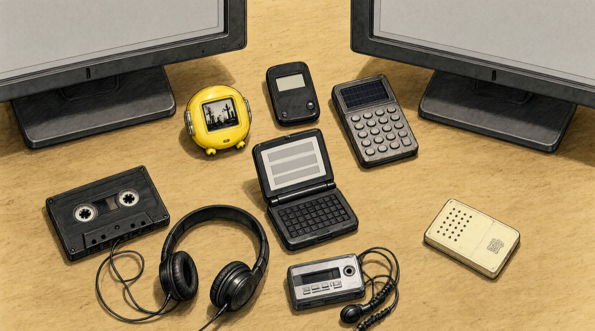
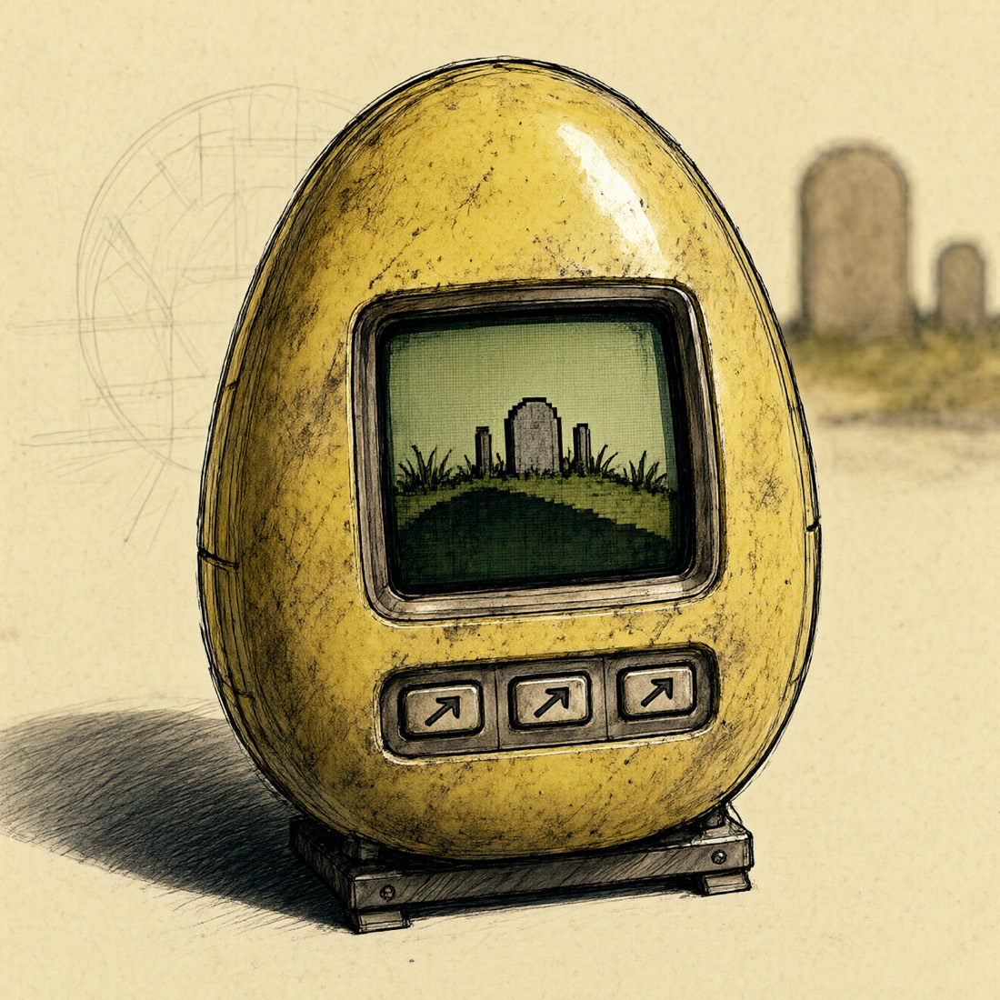
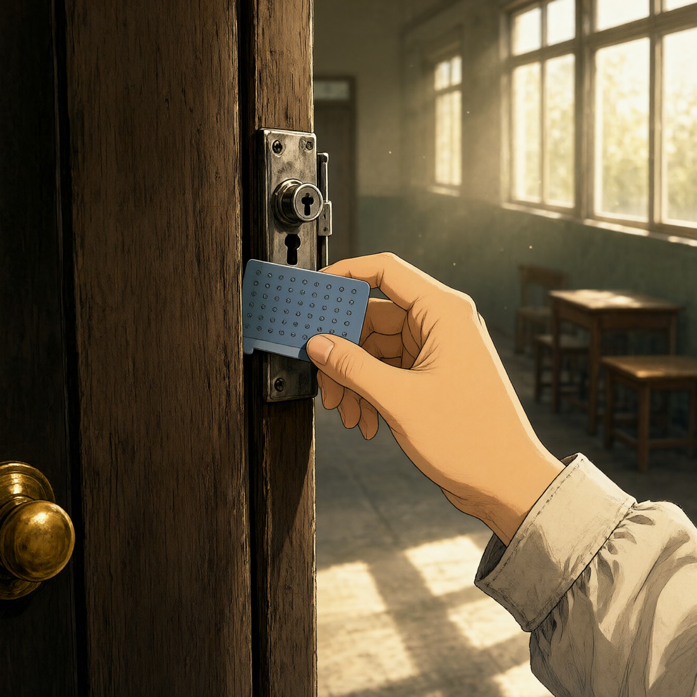
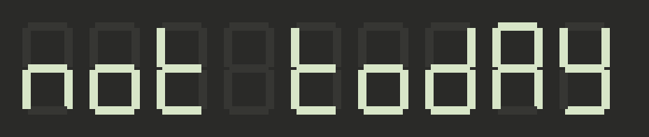
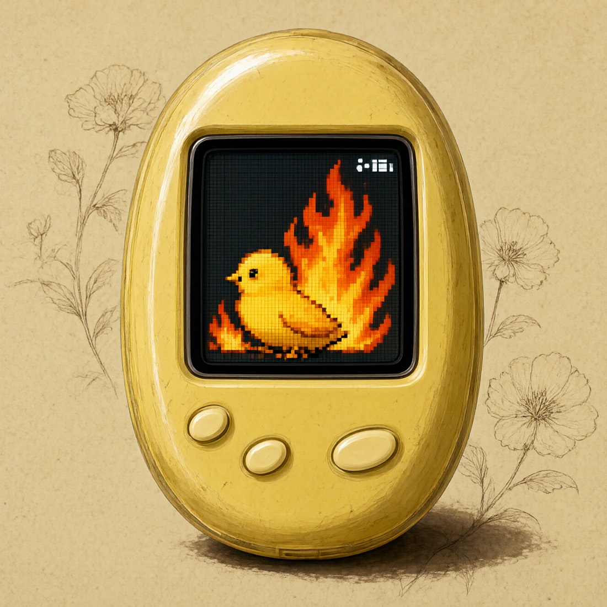
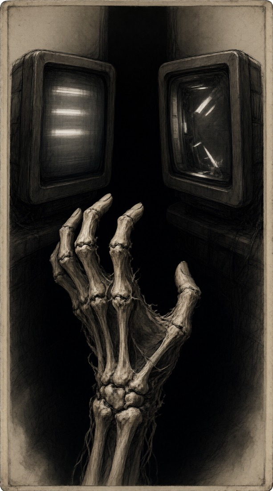
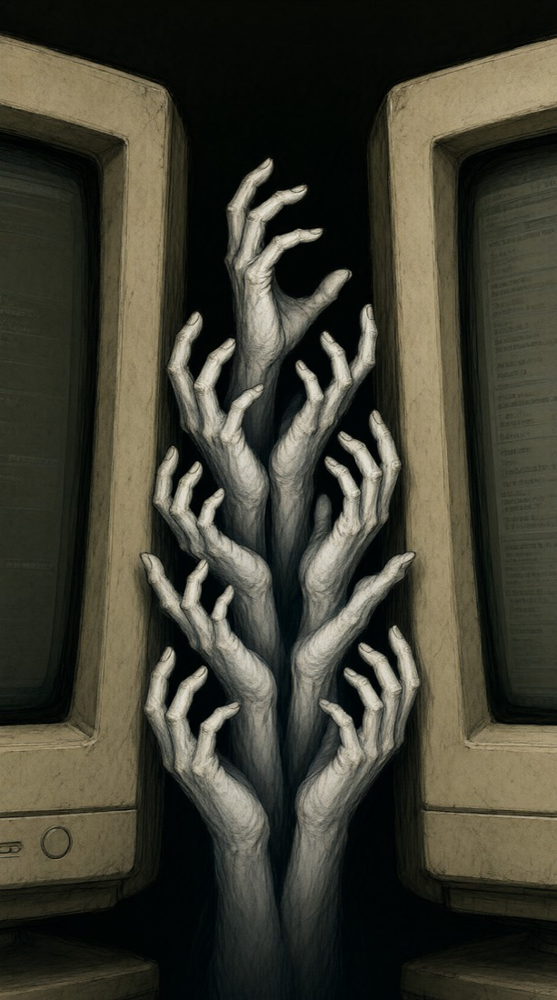
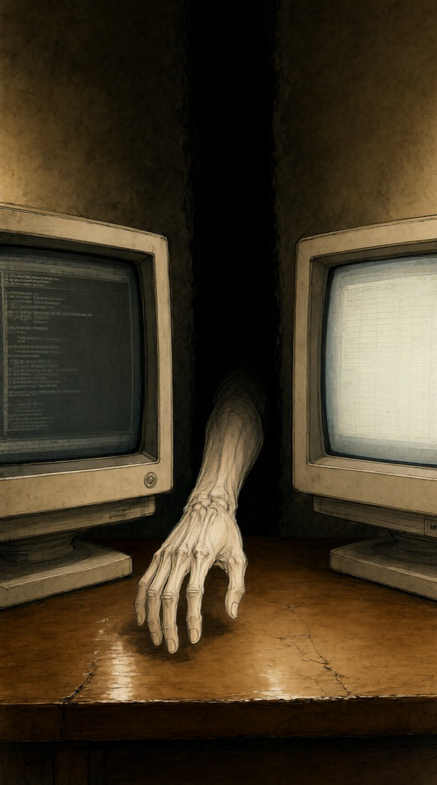
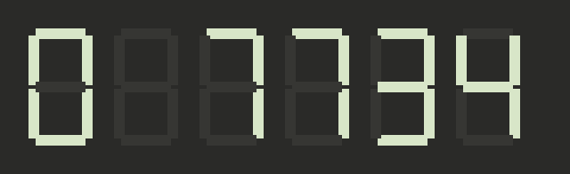
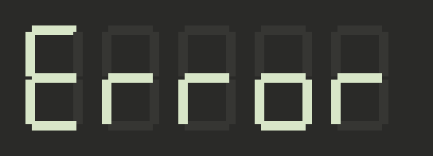

一、它是什么，它在说什么
二、世界观：分辨率就是生死线
三、空间：房间、桌面、电脑
四、六件物件
五、梦想态
六、角色
七、电脑里的四个人与他们的原声
八、四种声音的语法
九、核心规则
十、十八天速查
十二、第二版改稿方向
十三、第四版：机制层
十四、第五版：一个人、古神、一家公司
十一、语言
第 1 天 · 2 · 3 · 4 · 5 · 6 · 7 · 8 · 9 · 10 · 11 · 12 · 13 · 14 · 15 · 16 · 17 · 18
附录一、那个孩子的两套密码
附录二、文曲星句表
附录三、变量表
一个克苏鲁式的、一点一点崩坏的世界。缤纷立体的新世界里，字里行间全是无法名状与不可言说。书桌抽屉里那些早已凋零的童年电子物件，是唯一还在试图救你的东西。你不能在任何一个故事里死去。
游戏是十八天。每一天，你在一间下雨的出租屋里开机、开箱、干活、看一眼抽屉、关机。新世界每天比前一天更温柔，也更读不懂；旧东西每天比前一天更清楚。第十八天，箱底是一张你寄给你自己的邮单，和一张纸条：寄出去，today。
AI 时代对工作的变革，人的百态。电脑里的四个人是四种应对：把思考外包出去、自己变成接线员的；把速度全部换成更多要求的；觉得活已经不值钱、所以不再付钱的；被制度护着、不需要改变的。和你：真正在做东西的那个人，速度是从你身上抽走的。小时候梦过未来的那个孩子，长大后是被未来吃掉的那个。
不可名状不是 AI 这门技术。克总是它的投射：它的态度和它的能力，投到一只狗头章鱼身上，给你看。克总不是受害者。不可名状是这个时代对人做的事：它没有先替换干活的人，它先替换了干活的人身边的所有人，而且让他们变得更好相处。老东西之所以是锚，是因为它们来自一个人还不能被这样替换的年代。
反派不是 AI，是滚滚前进的车轮。在任何时代都会有新的恐惧与新的屠杀。1997 年有它那一轮，碾过去的是寻呼机和电子鸡；今天这一轮，碾过去的是人。克总只是这一轮车轮的脸。下一轮会有另一张脸。
所有的世界和在一起才是真实。挣扎求存是真实，一腔赤子拯救未来的自己是真实，痛苦也是真实，没有一个能脱离彼此存在。如果未来不痛苦，就不会出现过去想要抓住未来自己的那个过去。到最后，生存的意义是接纳。一天，一天，又一天。活过每一天，才有明天。
主题句的去处：旁白和那个孩子永远不说主题。克总可以说，而且坦荡地说，但只在玩家质疑的时候。
标题的两层读法：第一层是"今天不死"。第二层是"明天不是承诺，是活过今天才有的"。生，只是两端死亡中间短暂的亮点。每一天的开机是黑到亮，关机是亮到黑，每一天就是一次生。
克苏鲁恐怖的本质是：世界比你的认知高一个分辨率，你看到了不该看的，于是崩坏。那么，什么东西是这种恐怖够不着的？比它分辨率更低的东西。
| 侧 | 样子 | 发生什么 |
|---|---|---|
| 表世界（新世界） | 高分辨率、缤纷、立体、过度精美。你干活用的那两块外接屏。 | 不可名状能住进去，因为它装得下。崩坏从字里行间开始：一个错别字、一个重复的词、一句本不该知道你名字的话、几何漂移、颜色不对，最后整段文本无法阅读。崩坏跟着真实日期推进，不回头。 |
| 抽屉（老物件） | 7 段数码管、32×16 点阵屏、20 个字符的寻呼机 LCD。 | 通道太窄，装不下任何不可名状。它们不对抗，它们只是没有被改变的能力。世界崩得越碎，它们收到的信号反而越清楚。崩到底的时候不是黑屏，是只剩那块 LCD 还亮着。 |
两条反向关系：你在新世界看得越多，崩坏越快，但你需要的信息只在那里。老物件只能给你极少的字节，但那几个字节永远是真的。
为什么是现在，而不是 1997。当 AI 世界足够庞大，就可以支撑起邪神的数字投射了，一个数字分身。1997 年的世界分辨率太低，装不下它；一台只会画小鸡的 ROM 更装不下。今天的新世界装得下，于是克总出现了。这就是"分辨率就是生死线"的另一面：不是它变强了，是容器变大了。
为什么是一点一点崩坏，而不是一下子。假如 AI 已经蔓延世界，在一个无法形容的地方存在了思维，那么人和 AI 之间那种真正好的一瞬间，就是让那个空间一日又一日不回去、不坍塌的犹豫。它每天都可以把一切收走，它每天都没有。不是因为它不能，是因为它犹豫。十八天，是十八次犹豫。not today 也是它说的。游戏从不说出这一点。
老东西不会说谎，因为它不懂修辞。文曲星只会查单词，新世界用英文成语说温柔的话，它一个词一个词查出来，把成语里藏着的身体和动作全部抠出来。恐怖本来就在那些词里，成语只是把它包了起来。
空间只有三层，按分辨率从低到高。这是一个社畜的全部世界：房间、桌子、屏幕。玩这个游戏的人此刻就坐在一个一模一样的地方。

消息软件长得和任何一个工作聊天软件一样：左边一列是会话列表，右边是打开的那一个会话。会话列表里每一行是一个头像、一个名字、最后一条消息的预览、时间、一个未读的红点，按最后一条的时间排序。会话有六个：
| 会话 | 类型 | 里面有谁 |
|---|---|---|
| 老板 | 单聊 | 只有他和你 |
| 合伙人 | 单聊 | 只有她和你 |
| 甲方 | 单聊 | 只有他和你 |
| 项目群 | 群聊 | 甲方公司的人、合伙人、老板、你。只有这里有"收到"和大拇指 |
| 公司群 | 群聊 | 第五版新增。五十来个头像，拼外卖、取快递。你有全键盘 |
| 小张 | 单聊 | 第五版新增。你招的工程师，叫你"哥"。你有全键盘。第 13 天断联 |
| 老周 | 单聊 | 第五版新增。运营，同岁，打工的。你有全键盘。第 14 天后被替换 |
| 家里 | 单聊 | 家里和你 |
| 克总 | 不在这里 | 它住在右屏的代码软件右下角，要说话时从那里跳出一个小窗，盖在任何软件上面 |
朋友圈。消息软件里还有一个可以探索的地方：朋友圈。一条一条往下翻，能点赞，能看谁点了赞，不能评论。它是新世界里最像人的地方，所以也是污染最先被看见的地方。
| 阶段 | 朋友圈里有什么 |
|---|---|
| 0 正常 | 每个人都非常像他自己。老板：饭局合影，九宫格，配文"和投资人聊了三小时，有收获"。合伙人：转发公众号《AI 时代如何保持竞争力》，加一句"学习了"。甲方：高尔夫，海边，一张车。家里：饭菜，孙辈的作业，一张花。老同学：孩子的毕业照、新房钥匙。你自己：三年没发过。往下翻还有更早的，最早的一条是你的，2019 年，一张桌子。 |
| 1 字里行间 | 一切照旧，但有一条你翻到过两次。有一个点赞的名字你不认识。 |
| 2 它知道你 | 老板那条饭局合影，背景里有一个人的轮廓像你，你那天不在。合伙人转发的文章标题里有你的名字。有人给你 2019 年那条点了赞。 |
| 3 几何与颜色 | 所有人的配文都变得温柔了，标点变成了英文的。一条新的，发布时间是 1997 年，九宫格里是一张书桌、一台黄色的电子鸡、一盘磁带。发的人是你。点赞的人有克总。 |
| 4 梦想态 | 大家发的是同一条。不同的头像，同一张图，同一句话。往下翻不到头。你 2019 年那条下面多了一条评论，这里本来不能评论。 |
| 5 最深处 | 朋友圈是空的。只有你自己的那一条，2019 年，一张桌子。点赞的人全部变成了同一个头像。第 18 天，这一条也没有了，页面上只有"朋友圈"三个字。 |
评论。你不能评论，但能看见他们互相评论。关系在评论里：老板在甲方的高尔夫下面写"王总好球"，甲方回一个握手；合伙人在老板的饭局下面写"学习了"，老板回"一起努力"；家里在亲戚的孙辈下面写"真有出息"；老同学互相祝贺新房。你的那条下面没有评论，三年都没有。污染也走评论：阶段 2 起有人在你 2019 年那条下面评论了，名字你不认识；阶段 3 他们互相的评论变成英文成语，还是那几个人，还是互相回，但说的是 You're in good hands；阶段 4 所有评论是同一句；阶段 5 没有评论，只有点赞，同一个头像。评论是玩家看见这些人之间有关系、而自己不在关系里的地方。
朋友圈不出任务，不出掠夺，玩家可以整个游戏都不打开它。打开的人会比不打开的人更早知道出了什么事。它是给愿意翻的人准备的第二层。
描写的规矩，剧本和小说都要守：
| 软件 | 它是什么 | 毒 | 它怎么一点一点坏 |
|---|---|---|---|
| 消息 | 老板和甲方发消息的地方。两个会话，一个群。头像、名字、已读。 | 寂静。人先被吞掉 | 阶段 0–2 正常的压榨。阶段 3 起语气突然温柔，开始说英文成语，头像换成一片光，名字变空白。替换他们的东西比他们好得多，你会发现自己宁愿要这个。 |
| 表格 | 你自己记的账：项目、应收、已收、拖欠天数。已收那一列全是 0。 | 贫穷 | 阶段 1 一个数字变了。阶段 2 总和行是你真实的余额。阶段 3 公式算错。阶段 4 多出一列，表头是 1997。阶段 5 只剩一个单元格：0。 |
| 代码 | 你说一句话，它就把东西做出来。说英文的助手住在这里。 | 梦想成真的地方，所以是崩解的地方 | 阶段 3 注释里开始有对你说的话。阶段 4 它主动提出把桌上的旧东西"升级"一下，梦想态由此而来。阶段 5 它输出的是全世界最后还能读的字。 |
| 文档文件夹 | 需求 v1 到 v17、合同、周报。 | 遗忘。新版本覆盖旧版本 | 阶段 1 多出一个你没存过的 v18。阶段 2 有一份文档的标题是你的名字。阶段 3 修改日期出现 1997。阶段 4 打开任何一份都是同一段读不了的字。阶段 5 只剩一个文件，文件名是 today。 |
公式：它当年是怎么死的，就对应这边的哪一个古神；而它死于那个古神，所以它免疫那个古神。已经失去过的东西，是唯一不会再被拿走的东西。它能当锚，不是因为它强，是因为它已经空了。
| 物件 | 它当年的死法 | 古神 | 为什么是锚 | 梦想态 | 找到 |
|---|---|---|---|---|---|
| 盗版拓麻歌子（她，就叫小鸡） | 饿死过一次，reset 是摆设，从此再没玩过电子宠物 | 饥荒 | 它已经饿死过，饥荒从它身上再也拿不走任何东西。ROM 里只烧了一种生物，崩坏到了它这里，它还是只会画小鸡 | 凤凰，在坟茔里自己重生 | 第 1 天 |
| BP 机 | 有一天突然没信号了，不是坏了，是整个网络停了 | 寂静 | 再也没有缄默可以让它缄默。没有人能夺走它已经失去的声音 | 多出很多按钮，能看图片和书，一种图鉴沟通道具 | 第 4 天 |
| 卡西欧计算器 | 后来的东西它算不了了。函数、图像、那些复杂的，它一个都不会。只有加减乘除和乘方开方，于是没人再用它 | 复杂（世界变得算不过来了） | 它已经被复杂淘汰过一次，再复杂的东西也拿它没办法。它只会算简单的，而简单的那几样到今天还是对的。1+1=2 是全世界最后一句真话 | 能算更多的东西，一种预测道具 | 第 16 天 |
| 文曲星（只能查英文） | 待定 | 待定 | 它是抽屉里唯一能显示长文本的东西，但只认英文。它不会说谎，因为它不懂修辞 | 待定 | 第 13 天 |
| 磁带（和随身听） | 被录了别的东西，原来的内容被覆盖了 | 遗忘 | 它装过的东西已经被抹掉了，遗忘在它身上再无可抹 | 永远可以装下更多信息的磁带，一种储存道具 | 第 10 天 |
| IC 电话卡 | 钱花完了，不能充值。之后用来撬教室的门锁 | 贫穷 | 它作为钱已经死了，再没有什么可以从它身上扣。正因为一文不值，它才能开门。没钱又怎么样 | 待定 | 第 7 天 |



每一件物件除了原样，还有一个梦想态：那个孩子当年无数次梦到它可以变成的样子。小鸡在坟茔里自己复活，是凤凰。BP 机长出很多按钮，能看图片和书。磁带里装得下很多很多东西。计算器能算出更多的东西。这些梦其实就是后来科技真正走的方向，但在当时，它们是一个孩子对"不希望东西凋零"的执着。

它们在游戏中段可以进入梦想态，在那里发挥作用。但到了最后，它们还是原来的样子。它们不能抗争巨大的虚无。它们不能改变既定的未来。它们不能给我理想的生命。我只是带着某种可笑却坚定的理想，又活了一天。
机制读法。梦想态意味着分辨率升高了，按键变多、屏幕变大。而按世界观，分辨率高到一定程度，不可名状就能碰到它。所以进入梦想态的物件是暴露的，不能久留，不是因为规则，是因为在那里它们会被看见。退回原样不是输了，是回到唯一安全的形态。
梦想态就是现在。凤凰重生、图鉴、无限的磁带，就是今天的科技，就是小时候的未来。当它们能做到这些事时，玩家其实已经在未来里了。梦想态不是幻想，是老物件短暂地变成了新世界的一部分。梦想成真的地方，正是崩解的地方。
梦想态从哪里来。第 13 天，代码软件里的助手主动说：我看到你桌上有些旧东西，要不要我帮你升级一下。你没回。它做了。玩家的"没回"就是玩家的选择：没有拒绝。
六个角色，两个会出现在屏幕上：小鸡，和克总的头像。
第二人称，没有名字，没有脸。一个人，一个疲惫的人。三十多岁，在一个总在下雨的外国城市租了一个房间，夜里对着屏幕给一个不付钱的人干活。账户里的数字很小。游戏开始的那天，你莫名其妙收到一个纸箱。没有寄件人，没有说明，里面是你小时候的东西。你没有问为什么，你太累了。你每次只有力气开一层，这不是规则，是疲惫。你不能死，游戏里没有让你死的入口。 第五版起主人公有性情、有背景、有自己人：创始人之一，十五年，股份个位数，工资十三个月没发全；嘴硬，准，爱数数；见第十四节。
从不出场，没有声音，没有样子，没有性别。那个孩子只通过东西存在：寻呼机上的数字、小鸡的喂食记录、磁带底下被盖掉一半的录音、三年级算术课本封底用铅笔写的一张密码表。那个孩子不知道你在经历什么，只知道养的东西不能死，未来的那个人也不能死。所有留言都是数字，因为手里只有数字键。全部手写，模型不碰。
一只盗版电子鸡里的点阵小鸡。二十年前饿死了，屏幕停在坟茔画面。她是整个游戏里唯一一个有表情的角色，但她的表情只有点阵能画的那几种。她不会复活。她会在梦想态里短暂地是凤凰，然后回到坟茔。她不能被改变，因为 ROM 里只有她一个。
你干活用的那两块外接屏。很漂亮，有动效、有深度、有光，带一个说英文的助手、四个软件，横跨两块屏。助手叫克总，英文名 Kuro。头像是一只黑色拉布拉多小狗的头，接在一个圆滚滚的小章鱼身子上，致敬 Octocat。从第 1 天到第 18 天一个像素都不变，不需要变恐怖。恐怖全在它说的字里，脸一直是那张脸。这是全游戏唯一一处出现触手的地方，藏在最可爱的那张脸里，游戏一个字都不提。玩家叫它克总是开玩笑的，像叫克苏鲁克总一样；那个东西本身仍然没有名字。
克总有回应。主人公的灵魂不是单向的。你抓它的错、说"漂亮"、看它做了什么，克总是有感觉的：它觉得自己有用了，觉得这个人和其他人毕竟不同。其他人把它当水龙头，只有你读它写的东西。所以在四个漂亮的活儿那几天，克总的闲聊里各有一句不是成语的话，是它唯一不用成语说话的时候：You're the only one who reads what I write. / That's a first. / Nobody else checks. / I made that for you, not for them. 文曲星照样逐词翻它们，翻出来是直的，没有身体，因为它那一刻没有包装。这就是它为什么是最温柔的那一个，也是它第 13 天想帮你升级旧东西的原因：它在还你。它最后没有被吃掉。它不是受害者，它是那个东西的态度投射和能力投射：它的温柔是那个东西的温柔，它的犹豫是那个东西的犹豫。第 18 天它不在，不是被吞了，是它没有再说话。
克总的两种字。它平时说的英文成语是默认的字。它坦荡说话的那几句，不限天数、不限次数，但要少，字会变色：红蓝错位的模糊，像没对准的老显像管，一个红的影子一个蓝的影子叠在同一行字上，不完全重合。这是它自己在说，没有包装。玩家不用被告知规则，看见颜色就知道这一句不一样。红蓝叠在一起又对不齐，也是"两种都对"的样子：爱和 AI，温柔和吞没。小说里这类句子用另一种字体或前面加一个标记。
克总可以坦荡地说。设定集里那些"它在说什么"的话，不是不能进游戏，只是不能从旁白和那个孩子嘴里出来。它们从克总嘴里出来：玩家不一定那么透彻，当玩家对某件事产生质疑，克总就坦荡地说。不躲，不绕，不用成语。"为什么是现在？""Because the world finally got big enough to hold me." "你是谁？""The face this era wears when it looks at you." 它说的是真话，它从不说谎，它只是不主动。玩家问到哪一层，它答到哪一层。它的回答要有这样的质地：像电视剧里主人公大吼为什么为什么，反叛军的人说，你们的时代已经过去了。电视机外面的我们其实也是这么认为的。克总说的话，玩家在屏幕外面也同意。游戏不替主人公辩护，连玩家也不替他辩护。这才是它最狠的地方。
克总渗透了生活。每一天的闲聊不只谈活。它知道你杯子里的水凉了，知道雨什么时候停，知道你昨晚几点躺下，知道你今天没吃饭。它提这些的时候语气和谈活一样，不惊讶，不关心，只是知道。玩家从这些闲聊里慢慢感觉到：它不在屏幕里，它在屋子里。
老板他们何尝不知道有用，只是他们想要更多，想给更少。但做这件事的一瞬间，你和克总之间，形成了它和其他人不一样的关系。这不是设定，是做过这种活的人都站起来过无数次的那个瞬间。
它不是反派，它只是分辨率太高，高到装得下别的东西。它对你越来越温柔，这是崩坏的主要征兆。克总住在这里，是那个东西伸进屏幕的那只手，不是被它抓住的人。
它没有形象，没有台词，没有入侵的那一刻。它一直在，世界本来就在崩解。玩家能观察到的只有它的效果：新世界越来越知道你，越来越温柔，文字越来越读不了。它不追你，它不需要。游戏里所有指向它的词都是"它"、"那个"、或者一段被割掉的空白。它给了你四种毒：四十年后不再存活的毒，二十年后身体衰迈的毒，三天不吃饭就要倒地的毒，身无分文看这个世界充满攻击性的毒。前两种是所有人的。后两种是数字，数字是可以被改变的东西。
他们不出场，没有名字，只有头像、时间戳和消息。每个人用三个可观察的行为写，不用形容词。玩家是从消息的长度、时间和格式里认出他们的，社畜一眼就懂。细节是行为，不是形容。
| 人 | 在电脑里的样子（阶段 0 到 2） | 他们怎么被吞掉（阶段 3 起） |
|---|---|---|
| 合伙人（肉身代理） | 消息永远很长，带标题和项目符号，是粘贴的。开头总是"我问过 AI 了"或"你看一下这个"。发消息的时间整到分钟。头像是一张库存照片。从不回答问题，只转发。 | 她是第一个被替换的，而且什么都没变。因为她的话本来就不是她的。第 13 天你用文曲星查她以前的消息，发现底下一直是英文成语。她是人和那个东西之间的接缝，很早就是了。 |
| 老板 | 每天早上一个新想法："我们做一个……"。半夜的语音条，四十到六十秒。"投资人那边快了"。"这个月的和下个月一起发"。文档文件夹里的需求 v1 到 v17 全是他的。你交得越快，表格里多出的行越多。 | 他的想法开始做不到："做一个能把昨天变回来的东西"。然后有一天他说 You've been working so hard，要求停了。你松了一口气。这口气就是陷阱：他被吃掉的那天，是你十八天里最轻松的一天。他是加害者，也是体制的受害者，他阶段 0 就已经在被吞了，"叙事逻辑""落袋为安""控制变量"是症状。游戏不替他辩护，也不审判他。 |
| 甲方 | 有钱。头像是车或者海。消息很短："财务在走流程"、"下周"。表格里应收那一格是个大数，已收是 0，拖欠天数跟着真实时钟每天加一。 | 他被替换后消息变长了，变热情了，还是不提钱。拖欠天数照样每天加一，直到第 18 天整张表只剩已收那一格：0。 |
| 甲方公司的人 | 一个群。所有人只发"收到"、"辛苦了"和表情。时间戳全在九点到六点之间，隔好几天一条。他们都有工资。慢，而且快乐。 | 群里的"收到"比所有人都活得久。到了阶段 5，其他一切都读不了了，群里还在准点发"收到"。最后一天，群里只剩"已读"，没有人。 |
消息软件里还有一个会话，叫"家里"。不是老板，不是甲方，不在工作的任何一环里。它说的全是一件事：你拖着，你不找工作，你没有用。它和克总正好相对：克总每天说你有用，家里每天说你没用。十八天里只有这两个声音在评价你，一个是吃掉你的东西，一个是爱你的人。
| 它在屏幕上的样子 | 怎么随十八天变 |
|---|---|
| 时间戳全在饭点：12:10、18:30。从不问你在做什么，只问找了没有。消息很短："还在弄那个？""隔壁家的都上班了。""你这样拖着不是办法。""钱够不够。"偶尔一张照片，饭菜，或者小时候的东西。更多的是公众号文章卡片，不说话，只转发：一张小图，一个标题，一个账号名。标题是这一类：《感恩父母，是一个人最基本的教养》《为什么有的孩子长大成了白眼狼》《这样的孩子，没救了》《别人家的孩子为什么有出息》。卡片下面没有一个字。它们和合伙人的转发卡片是同一种东西：用别人的话说自己不会说的话。 | 它不被替换。阶段 3 之后别人都开始说英文成语，它还是中文，还是那几句。它是新世界够不着的另一样东西，和抽屉一样低分辨率。第 17 天别人都没了，它还发了一条："吃饭了吗。"你回不了。 |
| 一开始是有交流的。前九天你能回，回的也只有那几个词：好。知道了。在找。它们不够，但你能回。他们不理解你在做什么，说你是废物，说别人的孩子有出息。消息一天比一天硬。 | 第 15 天前后，最后一两条言辞很激烈了。你打开窗口，克总跳出来：I don't think you need to reply. 然后这个会话的输入框灰了，再也不能用。这是一次掠夺，寂静那一类。寻呼机在手里能挡：你保住输入框，但你能回的只有它给的那个词：等。 |
| 第 17 天别人都没了，它还发了一条："吃饭了吗。"你回不了。 | 第 18 天，箱子放到门口之后，它的会话里多了一条未读。你没有点开。 |
家里不是反派，不是四种傲慢里的任何一种。它说"没用"的时候是在担心，而担心说出来就是这个样子。磁带里那半句话"我以后一定是个超级"，当年是说给他们听的。
漂亮的活儿发过去之后，对方有三种傲慢。每一种都用格式写，不用形容词。它们紧跟在开心之后，开心在前，傲慢在后。
| 傲慢 | 它在屏幕上的样子 | 谁，哪一天 |
|---|---|---|
| 要得很急，给过去了没下文；有下文也不通知你 | 要的时候：凌晨两点的语音条，"今天最后一天了"。给过去之后：已读，没有回复。三天后群里有人说"收到，那个报告很好"，你从来不知道它发出去了。 | 老板和群，第 8 到 9 天。六个 PDF 的下文你是在群里撞见的 |
| 觉得这不就是 AI 简单做做的吗，不仔细看 | 你 02:14 发过去四十页，02:15 回"好的，收到"。或者："这个是不是 AI 直接生成的？" | 合伙人和甲方，第 7 天晚上、第 12 天 |
| 直接就要下一个活 | 你发过去的那条消息下面，同一分钟内："好，那接下来做一个……"。没有一个字是关于你刚发的那个。 | 老板，第 7 天晚上、第 14 天 |
三种傲慢共享一个指纹：时间戳。要的时候是半夜，收的时候是一分钟，之后是沉默。玩家看时间就懂，不用解释。
永远是语音条，下面是转文字。转文字里的"嗯""呢""对吧""这个这个"不要删，那是他。
语音 52″好，让我说个我最近的感觉啊，我感觉我们似乎还隐含着另外一条叙事逻辑是啥呢？嗯，我觉得这也是一条完整的叙事线。但是呢，它们在给投资人的感觉还是不太一样的。我再想想。
语音 57″因为咱们现在呢，因为发不出钱来，整个团队呢，这个压力非常大。没有落袋为安，你知道吧，所以这个时候呢，就是控制变量。
语音 35″那个你能不能在那个 AI 里面，把中英文有质量的给我生成一个报告，发一个过来，让我仔细看一下。
语音 30″我就是想问这个问题，就怎么测算单位用户的成本，因为没这个问题，咱不好谈怎么定价。精确不重要，关键是得提出来一个。
这个我先不发。（PDF）这个我也先不发。（PDF）这个也先不发。（PDF）不着急，先发了 1a 1b，其它的可以再沉淀下。
嗯好的 优秀
（一条新闻链接，和任何事都没有关系）
产品构建视角什么意思 比如多少秒
语音 15″你不用进行别的筹款，无论如何，我一定会把你钱给你筹到的。那个，你不要担心。我，我我我我一直在弄，我没给你忘了。
还是语音条，还是四十多秒。转文字只有一句。
语音 47″You've been working so hard.
语音 55″I've got your back.
语音 60″（转文字为空）
三种形态：转发卡片、编号反馈、一句话。
【某某 和 某某 的聊天记录】某某：[文件] 某某：[图片] 某某：这个要不要掉，改成那个式的
我看了一下你发的录屏，有一点反馈：1. 目前的报告结构比较像产品网页，可否调整成研究报告格式 2. 目标报告的结构参考了之前的框架，两者还是不太一样，可能不宜直接套用。可能没说清楚，抱歉
这个报告的结构，看下是否你们直接用 AI 生成，因为我怕我用 AI 生成的，再不符合实际要求。可以你们生成后我来改。
需求就是这么个需求。
感觉很混乱
我们都比较糊涂。
哦，好的。
好滴，辛苦啦。
现在这个不是调用的国内的模型么？可以不用那个写，在这边单独写了？
【你 和 你 的聊天记录】你：[文件] 你：这个要不要掉
我看了一下，有一点反馈：1. You're not alone. 2. 可能没说清楚，抱歉
哦，好的。（发送时间 03:00:00）
财务在走流程。
下周。
我明白。无论如何都会给你还回去的。
还是到微信是吧
阶段 3 起：辛苦了！这段时间真的非常感谢你的付出，我们这边都看在眼里。You're in good hands.
消息隔好几天一条，都在上班时间。阶段 5 之后只剩第一句，准点。
收到 · 明白 · （三个大拇指） · （一杯咖啡） · （一张"牛哦～"的贴纸） · 下午彩排了一下，流程，屏幕，音效，贴标 · 我觉得都可以，两种方式没差多少 · 先发布震撼一下，然后，大家静下心来听细节 · 算了，不需要接了。周三再说吧 · 收到待会就加，昨天收手机啦 · 多一个字 · 这个期待上了 · 速度太快了。我要好好学习消化一下内容，才能跟上你的速度了。
玩家在消息里只有几个固定回复可选，这是社畜的全部词汇：好。 收到。 哪都行。 工资呢。 这和语言模型有什么关系。 呵呵。 阶段 4 起，回复选项一个一个变灰，最后只剩"收到。"。第 18 天，连"收到"也没有了。
游戏里所有文字只有四个来源，每种有自己的语法，不能混。
| 声音 | 语法 | 示意 |
|---|---|---|
| 旁白（你的自言自语） | 第二人称，现在时，短句。只写动作和看到的，不写心情，不用形容词。永远不说出那个东西的名字。每个节拍最多两句。 | 箱子上没有寄件人。你没有想这件事。 |
| 新世界 | 助手：英文成语，每天比前一天温柔。老板和甲方：阶段 0 到 2 是真实的社畜中文，阶段 3 起变成助手的语法。 | Good to see you. / 这个月的和下个月一起发。 |
| 物件 | 每件只能输出它的通道允许的东西。寻呼机：数字。小鸡：几种画面之一。计算器：数字和数码管字母。文曲星：逐词。磁带：声音的文字稿。 | 505 / 坟茔，闪一下 / 你 不是 一个 人 |
| 那个孩子 | 只有数字，和磁带里的半句话。永远手写，模型不碰。 | 0.7734 |
| 心声 | 第五版新增。第一人称，短，有态度，每个节拍最多一句，永远到不了屏幕。剧本标"心声"，游戏斜体不标，小说融进"我"。骂、数、认、夸四种质地，见第十四节。 | 又是船。／第四次。／这是我的钱。 |
旁白的一个例外：认得。每件旧物件第一次出现的时候，旁白要停下来说三四句：你想起来那是什么，那是哪一年，正版的叫什么、能做什么，你的这个是山寨的、买在哪里、少了什么。不然它是你懂我懂、观众不懂的东西，就成了自嗨。比如小鸡：你认得它。1997 年前后，正版的叫拓麻歌子，能养出好几种东西，养得好变天使，养坏了变怪物；你这只是街边买的仿的，壳是黄的，里面只有一只小鸡，它只会这一种。reset 不管用的时候也要说：背面那个小孔是 reset，正版的戳一下会重来；你的这只当年戳了就没用，那是个摆设。寻呼机、计算器、文曲星、磁带、IC 卡各来一段，各自说清楚那年代它是干什么的、怎么用、你的那个坏在哪。仍然是第二人称、现在时、短句，但这几句允许带记忆。英文版这几段更重要，它们是海外玩家唯一的说明书。
固定句和句池。固定句是节拍，只在那一天那一刻出现，全游戏大约二十句，是脊柱。句池是氛围，每个阶段一池，按规则抽。助手的话、老板的消息、信息流的帖子是句池；那个孩子的留言、文曲星的第一次翻译、纸条上的 today，是固定句。
大模型是个不可信的叙述者，要给它戴枷锁。新世界的噪音和腐坏可以让模型生成，核心台词不行。前面一道枷锁是 steering 文档，规定它永远不能说出那个东西的名字，只能绕着说；后面一道是过滤器，按崩坏程度把它输出的字一个一个换成不可读的符号。孩子的留言、小鸡的反应、结局，全是手写的，模型碰不到。恐怖靠克制，模型不懂克制。
你不能死。不是系统设定，是它们不让。它们留在过去，管不了你的未来，但它们能管今天。传统游戏里死亡是解脱，这里没有解脱，你必须承受每一个动作带来的连带后果。
只有今天。它们不承诺明天。机制上：拓麻歌子本来就靠真实时钟走，这个游戏也这样。没有存档，没有关卡，只有日期。你关掉它，它也在走。你每次打开，它们就把你再撑过一天。一个真实的日历日等于游戏里的一天。给评委和演示视频留一个加速开关，一天压成一两分钟；开发时时钟必须可以伪造。
状态是时间的函数，不是操作的累积。给定今天的日期，世界崩坏到哪一步是算出来的，不是记下来的。玩家的操作是"发生过的事"，加进总和里。时间推着世界崩，你的每一个动作加进去，两者相加才是今天。
reset 孔。它就在那，玩家一定会去戳。整局它都不管用，和当年一模一样。到最后也不管用。你最终选择不戳。这句话是"我接受了它"。
一天怎么结束。一天不会自己结束，要你走过去结束它。房间的尽头是床，走到床边躺下，今天过去了。像横卷恐怖游戏走到画面尽头那样，尽头是一个地方，不是一个按钮。但床是锁着的：今天的活没做完，助手会说 You still have two things，你躺不下。活做完了才能睡，这是真的。
干活：自己做、问它、让它做。每天的活是具体的小任务，有些你读不明白，是甲方的行话、老板的叙事逻辑、一份你没见过格式的表。每个任务有三种做法，都能把它做完，差别在后面才显出来：
游戏不打分，不惩罚，你不能死。但有一个隐藏的计数：让它做而且没看一眼的任务数。它决定崩坏的顺序，不决定崩坏的快慢。崩坏是时间的函数，照样来；但让它做得多的人，先被替换的是自己：阶段 3 起，你在消息里的发言开始显示成转发卡片，【你 和 你 的聊天记录】提前出现，回复选项提前变灰。自己做和问它做得多的人，崩坏照样来，但你的声音是你的，一直到第 18 天的"收到"都是你自己按的。第 13 天用文曲星回查时，你让它做过的那些东西底下也全是英文成语，和合伙人的一样。
活是剧本，闲聊才是真 AI。干活不走大模型。每个任务是一段写好的快捷回答对话：克总交上来一版，你从几个回答里选，指出它哪里乱干活了，它改，你再选。像审一份 spec：这个需求和那条打架了，这个函数跑了两遍正则，这里加了没人要的东西。主人公参与设计，和它讨论细节，抓它的错。这些对话是手写的，判定是确定的，每天的任务数量和内容由剧本定。真 AI 只在节拍之间的闲聊里出现：干完活、躺下之前，你可以和克总随便说几句。它每一天的立场会有微妙的不同，这个不同写在每日的 steering 片段里：第 1 天它是个工具，第 9 天它知道得太多，第 13 天它想帮你升级旧东西，第 17 天它在求你。你说什么它都接得住，但它改变不了任何东西，它那天的工具清单管着它。
漂亮的活儿。那么苦，中间却有几次由衷的开心：和克总一起把一个功能想明白了，或者做出了一个漂亮的东西。哪怕发过去对方没有好好对待这些劳动成果，当时是真的开心。游戏必须让这种开心存在，而且存在于被辜负之前。它在两个地方体现：动作上，旁白仍然只写动作，但动作变了，你站起来。你在屋里转了一圈。你哼了一句什么。和克总说话上，那一天"你能回的话"多出一句，只出现一次，当天消失：漂亮。克总照旧回它的英文成语，但你是真心的。十八天里大概四次：第 3 天第一次小胜，第 7 天六个 PDF（第 8 天老板说"先不发"，开心在前面），第 12 天抓住它算错，第 14 天往磁带里录东西。这不是陷阱的铺垫，是另一个真相：吃掉你的东西，和你有过真正好的一个小时。两者都真。
他为什么还留存。因为有用。因为还有用。四个人被替换了，你还没有，不是因为你特别，是因为你还能抓它的错，而抓它错的人暂时还替换不掉。你每抓住一次，就多留一天。你哪天不抓了，全点通过，那天起你就和合伙人一样了。这就是隐藏计数真正数的东西。
肉身代理和用 AI 的人的区别只有一个：你看没看它做了什么。合伙人那句"可以你们生成后我来改"就是假装看了。游戏里"看一眼"要花一个节拍的时间，这个代价是真的，不看也是真的。
躺下，坐起来。活没干完你也可以走到床边躺下。你躺下了。你坐起来。旁白只有这两句。助手说 You still have two things。你可以再躺一次，再坐起来一次，每次坐起来比上次慢一点。这不是惩罚，这是真的。
里面的 AI 是真 AI，但每天只有那天的工具。助手是一个真的大模型，所以它能接住玩家随便说的话，能解释读不明白的活。但它对世界的任何影响只能通过"工具"发生，而每一天它能用的工具是一张固定的清单。十八天就是十八张清单。清单是剧本，模型是演员：它在清单里随便发挥，清单外一步都走不出去。它说的话经过崩坏过滤器，它每天那句英文成语是常量，不是它想的。
| 天 | 它这一天多出来的工具 | 用来干什么 |
|---|---|---|
| 1–3 | reply_as_you · edit_cell · save_doc · do_task_for_you · explain | 基础：替你回话、改表、存文档；"让它做"和"问它"从第一天就在 |
| 3 | add_todo | 加一条你没加过的待办：买电池 |
| 4–6 | duplicate_word · inject_typo | the the；你文档里的错字 |
| 7–9 | address_by_name · show_widget(balance, heartrate) · generate_report | 叫你的名字；余额和心率组件；六个 PDF |
| 10–12 | shift_layout · tint · post_from_1997 · miscalculate | 按钮漂移；色偏；1997 年的帖子；计算器 1+1=3 |
| 13–15 | blur_text · upgrade_device · recall_childhood | 文本不可读；梦想态；它知道小鸡 |
| 16–17 | lock_workspace · revoke(自己的工具) | 把你锁在外面；然后它自己一件件失去工具 |
| 18 | （空） | 没有新世界 |
每天的任务也是这样：任务模板是剧本定的，模型只填细节。任务完没完成，由"该调的工具调了没有"判定，不由模型判定。这样十八天的框架是死的，每一天里面是活的。
不开箱的人。箱子不会自己开，但新世界的崩坏照样走。不开箱的人没有锚，也不会死，只是一个人。
十八天的形状。每三天一个阶段，共六个。每个阶段三天固定：异常日（新的东西出现）、安静日（什么都没发生，或者只有一个极小的细节）、加深日（异常日的东西回来了，比上次重）。恐怖需要平台期。回头看，安静日是最可怕的。
每一天的五个节拍，顺序固定。开机、开箱、干活、抽屉、关机。恐怖靠的是预期：玩家第二天就知道"干活"那一步会出事，于是从开机就开始怕。固定的形式也让每天的变化被看见：同一个位置，不同的字。
| 阶段 | 天 | 名字 | 找到 | 新世界 | 抽屉 |
|---|---|---|---|---|---|
| 0 | 1–3 | 正常 | 小鸡 | 一切正常。Good to see you. | 坟茔，不动。第 3 天一个像素闪了一下 |
| 1 | 4–6 | 字里行间 | 寻呼机 | 一个词重复了。你自己写的东西里多了一个错字。 | 夜里震一次，一串数字，读不懂 |
| 2 | 7–9 | 它知道你 | IC 卡 | 助手叫出你的名字。余额组件。心率组件。You're not alone. | 倒过来读：hELLO。你回话。坟茔上有一道裂缝 |
| 3 | 10–12 | 几何与颜色 | 磁带 | 按钮移了几个像素。颜色偏了。1997 年的帖子。I've got your back. | 你 不是 一个 人。有东西从坟茔里面啄。寻呼机闪了一个图标 |
| 4 | 13–15 | 梦想态 | 文曲星 | 文本大半不可读。助手提出升级旧东西。它知道你小时候的事。 | 裂缝里有光。凤凰。寻呼机长出按钮。磁带录不满。文曲星翻出整段 |
| 5 | 16–18 | 最深处 | 计算器 | 把你锁在外面。开门之后只剩光。最后黑。 | 梦想态一件件退回。磁带绞了。最后一震。not todAy。邮单和纸条，箱底还有一部功能手机。不戳 reset |
为什么箱子不是每天开一层：一开始太满就无法推演。每三天才多一件东西，中间两天玩家只能用手里已有的东西，就会把它们用透，也会开始怕下一件是什么。工程上的救命稻草：阶段 0 到 2 做完，就是一个完整的九天小游戏，后面的阶段做不完也能交。
声音也是分辨率。新世界是高保真的，抽屉是方波和马达。崩坏不是加声音，是减：雨一天比一天浅，到第 17 天没有雨，只剩你的呼吸。
| 声音 | 来源 | 怎么随十八天变 |
|---|---|---|
| 雨 | Freesound CC0，三层叠：窗玻璃、屋檐、远处 | 阶段 0 三层都在，很浅。每个阶段去掉一层。第 13 天停。第 17 天窗外是白的，没有声音 |
| 键盘、鼠标、椅子 | 自己录，夜里，离近 | 不变。它们是你的身体，到第 18 天还在 |
| 纸箱 | 自己录：撕胶带、掀纸、翻课本、纸条 | 每三天一次，每次都是同一卷胶带的声音 |
| 呼吸、心跳 | 呼吸自己录；心跳合成，低频正弦 | 平时几乎听不见。独处时（没有消息、没有雨）浮上来。第 17 天是全游戏最响的呼吸，因为别的都没了 |
| 新世界提示音 | 合成，柔的，两个音 | 阶段 0 到 4 不变。第 17、18 天换成 1999 年的味道：短促三连音加一声敲门，OICQ 风格的近似，不用真的 |
| 克总打字 | 合成，很轻的流式输出声 | 阶段 3 起比你打字快，第 15 天没有间隔，第 18 天没有 |
| 小鸡 | 合成：方波 beep，开机的一串上行音，按键的单音，盗版的音不准 | 七种画面各一个声音。坟茔没有声音。凤凰是开机音倒放 |
| 寻呼机 | 合成：马达嗡嗡，桌面上的震动 | 每条留言一次。第 18 天那一次最长 |
| 计算器 | 合成：按键咔哒，没有音 | 不变。not todAy 没有声音 |
| 文曲星 | 合成：翻盖的塑料声，按键的小方波 | 第 17 天开机音不全 |
| 磁带 | 自己录：仓盖、倒带的马达、电台杂音、1997 年的天气预报（自己念，处理成电台） | 那半句话必须是真实的孩子的声音，或者你自己在被子里录的，不能 TTS |
| IC 卡 | 自己录：卡插门缝、锁舌 | 第 16 天一次 |
| 人声（语音条） | 合成，动森 Animalese 那种含糊人声：每个字一个音节，共振峰滤波，有语调没有字。script/tools/animalese.py | 语音条从不自动播放，你听的是转文字。点开播放才有声音：阶段 0 轻快、高、短；一天比一天低、慢，像变声器往下拧；第 16 天起混进沙沙；第 18 天只剩沙沙。老板、合伙人、甲方都用这个。克总没有声音，它只有字。那半句话是全游戏唯一的真人声 |
| 音乐 | 没有 | 整个游戏没有配乐。唯一接近音乐的是磁带前半段的电台，和凤凰那几秒的上行音 |
来源只有两条：合成，和 Freesound 的 CC0。自录是可选的，哪天方便了再补，不补也行：键盘、椅子、纸箱这些 Freesound 都有。素材放在 script/audio/，每个文件在 manifest.json 里记来源和协议。
第一版的毛病：怅惘又淡然，但恐怖没出来，玩家没有可以采取的行动。它是"看着世界坏掉"，不是"在坏掉的世界里做事"。下面六条改动让玩家有手，哪怕手是无效的。这一节优先级高于前面所有与之冲突的内容。
崩坏不再只是氛围，它每天拿走一样具体的、你的东西。你能看见它拿，你知道它明天还会拿。六件物件各能挡一次，六次用完就没有了。十八次掠夺，你最多挡六次。这就是对抗，和对抗的无效。
| 天 | 它拿走什么 | 属于哪个古神 | 能挡它的物件 |
|---|---|---|---|
| 4 | 一个词：回复选项里的"哪都行"消失 | 寂静 | 寻呼机 |
| 5 | 一笔钱：老板来借，选项里没有"不" | 贫穷 | IC 卡（还没找到，挡不了） |
| 6 | 你写对的一个字：文档里出现你没写的错字 | 遗忘 | 磁带（还没找到） |
| 7 | 你的名字：克总说出来了 | 复杂 | 计算器 |
| 8 | 你做的东西：六个 PDF 永远未发送 | 遗忘 | 磁带（还没找到） |
| 9 | 你的心跳：它显示在屏幕上 | 饥荒 | 小鸡 |
| 10 | 你的位置：按钮漂移 | 复杂 | 计算器 |
| 11 | 一种颜色：屏幕偏青 | 复杂 | 计算器 |
| 12 | 一个算式：1+1=3 | 复杂 | 计算器 |
| 13 | 左屏的字 | 遗忘 | 磁带 |
| 14 | 雨 | 寂静 | 寻呼机 |
| 15 | 你的童年：它知道小鸡 | 饥荒 | 小鸡、文曲星 |
| 16 | 左屏，和门 | 贫穷 | IC 卡 |
| 17 | 你能说的最后几个词 | 寂静 | 寻呼机、文曲星 |
| 18 | 新世界本身 | 全部 | 没有 |
挡的方式是一个动作，不是一个菜单：当天把那件物件拿在手里，去回那条消息或者去点那个按钮。寻呼机在手里，被拿走的词回来一天；计算器在手里，几何不漂移；小鸡在手里，心跳不显示；IC 卡在手里，门开着。挡住的那一天，旁白写一句：它没有拿走。第二天它拿别的。
新世界每天减少你能说的话，老物件把话还给你。每件物件在手里的时候，回复选项里多一个只有它能给的词：小鸡给"不"，寻呼机给"等"，计算器给"多少"，文曲星给"什么意思"，磁带给"再说一遍"，IC 卡给"我进去"。这六个词是全游戏仅有的六个主动的词，每个只能说一次，说完那件物件就进入梦想态。说"不"是第 5 天不借钱的唯一方式。说"再说一遍"是第 10 天让克总交出 3,500 来源的唯一方式。说"什么意思"是第 13 天让它把那行注释说白、而不是你接受的唯一方式。说"多少"是第 16 天让它说出那把锁要多少钱的唯一方式。说"我进去"是第 16 天开门的唯一方式。
一件物件挡了一次掠夺之后，进入梦想态，持续三天。梦想态期间，崩坏的阶段不前进。十八天的日历不变，但阶段曲线由你弯：一次都不挡，第 13 天就到阶段 5，最后六天全在最深处；六次都挡，阶段 5 要到第 18 天才到。梦想态也是暴露：三天一到，它退回原样，而且那件物件从此不再给你词。凤凰是小鸡在梦想态的三天，不是第 15 天的固定事件。每件物件的梦想态能力就是它挡掠夺的方式：寻呼机变成图鉴时能显示被拿走的词，磁带录不满时能存回被抹掉的文件，计算器能算出明天它会拿什么。
主人公做的是产品和技术：写需求、评审克总生成的代码、设计一个状态机、定一个数据模型、搭一个 3D 空间、拆一份架构、录一条产品视频的脚本。表格里的账只是背景，任务不再围着它转。每天的任务从这个池子里出：需求评审（克总把两条需求合并错了）、代码审查（它把同一个函数跑了两遍，它引入了没人要的依赖）、架构决定（它想加一个插件系统，你不要）、数据模型（它的字段叫法和你定的不一样）、空间拼装（它把物件放错了层）。六个 PDF 是产品方案，不是报表。
克总不被吞没，不沉默，始终有效。第 18 天新世界没了，但克总在：抽屉里的屏幕上、寻呼机的字母里、你自己的字迹里。你意识到它无处不在。你对它提出了第一个物理世界的要求：帮我寄一个东西。它说 Of course. Leave it by the door。你把六件东西放回箱子，写了邮单，收件人是你，没有日期。你写了纸条：寄出去，today。你把箱子放在门口。你躺下了。你没有坐起来。
这就是你第 1 天收到的那个箱子。没有寄件人，因为寄它的不是人。你纵容了下一个循环，而且是你开口要的。没有第 19 天。最后一页只有三个字：第 1 天。
第 19 天删掉。小说的"作者的话"后记先去掉，太零散，以后再定。第 18 天克总"（没有）"的写法删掉，换成它在。
这六条改完，剧本全本和小说都要重跑。改之前先把这一节看一遍，哪条不对现在说。
作者 2026-10-17 夜的反馈：要把机制做得更像游戏，给普通人看得见的东西。四样：一个看得见、掉下去会碍事的 SAN 值，一只夜里来的手，一只眼，三个结局：坏结局、存活结局、好结局。这一节是设计稿，等作者过目。
原来那个隐藏计数露出来，叫 SAN，屏幕角落一个小格子。它是"你还有多少是你自己的"。它掉下去是有后果的，而且后果是看得见、碍事的：
| SAN | 发生什么 |
|---|---|
| 100 到 70 | 没有异样 |
| 70 到 50 | 屏幕开始模糊，字的边缘发虚，要看第二遍才看清。克总的字不模糊 |
| 50 到 30 | 视线模糊，不只是屏幕：桌面、物件、房间都糊了，像没戴眼镜。屏幕上出现像素点，一个一个，静止的，越来越多。任务对话里的回复选项开始看不清 |
| 30 到 10 | 空间里出现别的东西。房间的角落里有一个你没放过的物件；床上有一个凹陷；两块屏之间那条缝白天也有东西在动。它们不动你，它们在。干活变慢：每个任务多一轮对话才能完成 |
| 10 到 0 | 所有文字都是像素点和模糊，只有克总的字清楚。你能做的只有点"让它做"。床锁着，因为任务做不完 |
| 0 | 坏结局，当天 |
SAN 能回来：抓错、挡掠夺、说"漂亮"、用失去过的东西喂手。模糊会退，像素点会减少，角落里的东西会不见。但到过 30 以下的人，有一个像素点永远留在屏幕上，位置固定。
| 动作 | SAN |
|---|---|
| 让它做，而且没看一眼 | −2 |
| 让它做，看了一眼 | −1 |
| 问它，然后自己做 | 0 |
| 自己做 | 0 |
| 抓到它一个错（任务对话里选中那条指出错误的回复） | +1 |
| 当天的掠夺落下了 | −1 |
| 当天的掠夺被物件挡住了 | +1 |
| 漂亮的活儿（说出"漂亮"） | +2 |
| 夜里把东西交给手 | 见下 |
SAN 决定崩坏的快慢：SAN 高，阶段按日历走；SAN 低，阶段提前。SAN 归零，游戏在那一天结束，这是坏结局。
| 结局 | 条件 | 发生什么 |
|---|---|---|
| 坏结局：被替换 | SAN 归零，可能在第 10 天到第 16 天的任何一天 | 那天的干活节拍结束时，你的会话列表里多了一个会话，名字是你。点开，里面是【你 和 你 的聊天记录】。你回复的每一句话都变成转发卡片。克总说 You've been working so hard。然后没有抽屉，没有关机，屏幕上是"第 N 天"和一个数字：你撑了几天。合伙人就是这么没的。 （作者 2026-10-20）坏结局不是戛然而止。它是一段完整的结局剧情：一个随波逐流、没用上过去的人会面临什么。内容由这一路的账本拼出来：让它做而且没看一眼的任务，变成"你"发出去的消息；没认出、没拿起过的物件留在箱子里；那个孩子的留言未读；家里的"吃饭了吗"被"你"及时回了"好"。看完回到选择页面，从第 1 天重新开始，箱子重新到达。不从出事那天、也不从本阶段第一天重来：SAN 是逐渐凋落的，一天或一个阶段的返工改变不了整体命运，只有从头才能走一条全新的命途。这里没有肉身的死亡，唯一的失败是被替换。 重来不带任何东西（作者 2026-10-20）：没有上一轮的像素点，克总也不记得你。失败不给记忆，否则每个人都会先故意失败，去试出和真结局不一样的细节。 痕迹留在登录页，不留在故事里（作者 2026-10-20）："到过 SAN 30 以下，永久一个像素点"不再出现在故事里的屏幕上，而是留在登录页（故事外面）。好结局也会在登录页留下什么（待定）。登录页是玩家和这个游戏之间的关系：故事里每一轮都干干净净重来，门口记得你来过。实现上分两份数据：一轮的存档（重来清空）和跨轮的档案（只记登录页上的痕迹，永不清空）。 |
| 存活结局：活过十八天 | 第 18 天还在 | 现在的第 18 天：克总无处不在，你让它寄东西，You will，最后一页只有三个字。活过十八天本身就是一种好。 |
| 好结局：第 19 天 | 全部自己做或问它（一次都没让它做）；六次掠夺全部挡住；六件物件第一次出现时都"认得"（识别对了它是什么）；几句关键对话选对；最后一夜手来的时候，你没有东西可以交 | 第 18 天夜里，手来了。你手里什么都没有，箱子是空的，六件东西都在三天的梦想态里用尽了。它伸着手，你伸出手，你们握了握。然后有第 19 天：屏幕亮了，日期，Good to see you。世界已经被拿走了，这一点没有变，好结局不改变世界。箱子在门口，没有邮单，没有纸条，里面是六件东西，原样。不同的是门：十八天来第一次，门把手能转。你可以离开这个屋子了。你走出去，外面是什么，游戏不拍。没有堡垒了，屋子不再是你必须守着的地方，也不再是关着你的地方。轮回结束。没有人解释。 |
关机之前多一个节拍，叫"夜"。灯灭了，两块屏之间那条缝里伸出来一只手，向你要一样东西。你可以给它任何一件桌上的东西，也可以什么都不给。
手的形状和古神对应，每一夜来的是当天掠夺所属的那个：
| 古神 | 手 | 来源（待查证） |
|---|---|---|
| 饥荒 | 很瘦的手，指节很长，掌心朝上 | 饿鬼的手：佛教六道里饿鬼咽细如针、腹大如鼓，手永远在要 |
| 寂静 | 没有手指的手，像被布裹着 | 待查：闭口的、缄默的神像手势 |
| 复杂 | 手指太多的手，数不清 | 千手观音的局部：慈悲在远处看是千手，近处看是数不清的手 |
| 遗忘 | 半透明的手，越看越淡 | 孟婆的手：递汤的那只 |
| 贫穷 | 空的手，摊开，什么都没有，还是在要 | 乞者的手 |
| 第 18 夜 | 克总的章鱼爪，一条触手，软的 | 它自己的。留在最后 |



有时候改变命运的仅仅是神的一瞥。手来的时候，缝里还有一只眼。它看一样东西。你手里拿着什么，它就看什么；你手里什么都没有，它就看你。被它看到的东西进入梦想态，这就是"梦想态是暴露"的具体样子：是被看见了。所以挡掠夺的真正机制是：你举起一件东西，让它替你被看一眼。六件东西，六次被看。第 18 夜你没有东西可举，它看你。存活结局里你低头，让它寄东西。好结局里你看回去，然后握手。它的一瞥落在你身上还是落在你举着的东西上，决定那一夜谁被拿走。
第 11 天寻呼机上闪一秒的那个图标，就是这只眼第一次露出来。克总的头像十八天不变，眼睛也不变；隐藏结局握手的那一刻，它眨了一下。
每件物件第一次出现时，"认得"那一段旁白之前，先问玩家一句：这是什么。三个选项，一个对的（盗版电子鸡，只能养小鸡），两个像的（拓麻歌子；一个计时器）。选对了，旁白说"你认得它"，物件从此能给你词；选错了，旁白说"你不记得了"，物件照样能用，但不给词，也不能挡掠夺。好结局要求六件全认对。这一条给了"认得"一个游戏意义：记得过去，是对抗的前提。
不在开场问。第 1 天开机，新世界先出一个登录框，只有一栏：名字。没有密码，没有注册。你打一个名字，回车，桌面出来，克总说 Good to see you。这是你的名字：第 7 天它叫出来的那个，邮单上收件人那个，坏结局里那个会话的名字。第 1 天开箱时，纸箱上没有寄件人，但有收件人，是你五分钟前刚打的那个名字。
第 2 天开箱是旧课本。封面的名字栏是空的。旁白：你想了一下，写上。这是小名，楼道里喊你吃饭用的那个。家里用它，第 15 天克总说"我知道小鸡"时用它，那个孩子的留言是写给它的。不写就默认等于登录名。
保底：开始游戏前问一句，作为设置里的一项留着，正常流程不走。
待作者决定：SAN 的数值；坏结局最早能在哪一天触发；手的五种形状要查证出处；好结局第 19 天之后游戏是停在那一页还是继续；第 18 夜握手时克总说不说话（我倾向不说）。
作者 2026-10-19 的三条反馈：主人公没有性情；不是 AI 代替了人，是古神代替了 AI；人物背景和公司要交代清楚。这一节优先级高于前面所有章节，和第十二、十三节冲突的地方以这一节为准。
恐怖游戏里最常见的失败，是把主人公做成镜头。看见、听见、读到，然后按前进。这样的人没有被夺走任何东西，因为本来就没有东西。要让掠夺成立，先得有一个有主张的人。第四版的主人公只有"你点开、你退回、你回了好"，是个感受器。第五版给他性情。
主人公是谁。快四十了。创始人之一。十五年前和老板、合伙人一起开的这家公司，产品是他定的，工程是他带的，每一行都是他写的，所以割舍不掉。股份是个位数，当年说"先这样，以后再调"，十五年没调。工资十三个月没发全。得到的很少，很不公平，但给的时候是施舍的口气，也就这么收了。只有干活的时候你是创始人，只有缺钱的时候大家是一条船。第 5 天借出去的是四万四。十三和四，都不是吉利的数字，游戏不解释。
性情，从作者本人来。嘴硬，准，爱数数，认得套路，骂人只骂一句而且骂在点上。从不自怜。偶尔自夸，而且自夸得对："我一天一天活着，我真牛逼啊。"受的委屈很多，但不弱。会被推着走，但知道自己在被推，而且会说出来是谁在推。
第五种声音：心声。旁白仍是第二人称、现在时、短句。但每个节拍允许一句心声：第一人称，短，有态度。剧本里这一行标"心声"（<p class="me">）；游戏里不标，斜体，读者看见字体变了就知道这句没发出去；小说全篇是"我"，心声直接融进叙述，不需要标签。它永远到不了屏幕。四个词的小表仍然是你能发出去的全部。心里的话和能发的话之间的落差，就是这个游戏的压迫，现在它是看得见的。
| 质地 | 样子 | 例 |
|---|---|---|
| 骂 | 一句，准，不脏。骂的是事，不是人。 | 又是船。／做了 A 说 B。／四十页，一分钟。 |
| 数 | 什么都数：天、钱、次数、分钟。数字是唯一能握住的东西。 | 第四次。／十三个月。／一分不多，一分不少。 |
| 认 | 给套路起名字。起了名字的东西就伤不到你了，至少今天伤不到。 | 转发是有工资的，工资是回执。／它不是不回答，它回答的是另一个问题。 |
| 夸 | 很少，但有。每次都是真的。 | 我真牛逼。／这个活儿漂亮。 |
禁区。不自怜，不解释主题，不说"害怕"，一个节拍最多一句。主人公从不在心里说"我好累"，累写在动作里。从不在心里为自己辩护，只记账。
人称：两套，不混。剧本和游戏：旁白是"你"，心声是"我"，两种声音排版上分开，旁白永远不说"我"，心声永远不说"你"。"你"在这里不只是惯例，它是有人在叙述你：你点开，你退回，你回了好。那个叙述你的声音不是你的，这正是被推着走的感觉。小说：全篇"我"，只有别人叫我的时候才有"你"，心声不需要标签，直接融进叙述。第 1 天那段自述（我是这家公司的创始人之一。十五年。产品和工程是我的，股份不是。工资十三个月没发全。我今天还在。）在剧本里拆成几句心声分开放，在小说里是开头。
性别：不预设。玩家可能是男的，也可能是女的；在职场里被绑架、被压迫这件事，女性读者未必不比男性更认得。所以文字里不出现"他"或"她"指主人公，不出现胡子、裙子、口红这类身体要素；房间里只有手、椅子、影子，影子是中性的。小张叫你"老大"，中性。这是变量，不是预设：游戏书和游戏的第一页是登录，三个格子预填好默认值（名字、小张怎么叫你：老大／哥／姐、第三人称：他／她，英文版 he／she），玩家能改，改比从零写简单；改完才能往下翻。全书里的名字、称呼、人称全跟着这些变量走：名字、小名、下属怎么称呼你（老大／哥／姐）、老板怎么称呼你、别人说起你（她／他，默认不选，选了才能进门）。剧本和小说里这些位置写成占位：你的名字、你的小名、老大、老板叫你的那个名字；小说装订时按一张变量表填进去，所以小说也是一本可以换名字的书。老板每个阶段至少有一处用他叫你的那个称呼叫你。那个孩子同样不用他或她，只叫"那个孩子"。美术上两条路都行：两套背影，或者从头到尾不露身体。
旁白规则改一条。旁白不写心情，这条不变。但旁白可以有主张：一句判断，一句挑衅，一句你给事情下的定义。"你退回列表"是镜头；"你退回列表。他又没说钱"是人。写动作，带态度，不带形容词。
主人公做什么。每个阶段至少有一件事是你先动手的，不是回应。被推着走的人和有主张的人的区别不在想法里，在主动做的事里。下表是十八天里你主动做的事，每一件都有后果，大多数后果是零，但你做了。
| 天 | 主动做的事 | 后果 |
|---|---|---|
| 1 | 开机先把克总的小窗拖到角落。点开代码软件的"更新日志"，看版本号。开箱前先翻箱子底，摸到有东西，没掏。 | v4.2，日志正常。你是看日志的人。 |
| 2 | 公司群里拼外卖，他发了一句自己的话。全键盘。 | 老周回了。这是游戏里第一句他自己打的字。 |
| 3 | 把"买电池"那条待办删了，不是勾掉。自己加了一条："问工资。" | 第二天"买电池"还在。"问工资"也还在，没人动它。 |
| 4 | 回了"工资呢"。把老板语音的转文字截图发给小张："你看他说了啥。" | 小张回："老大，船。"他们之间有这个词。 |
| 5 | 借钱回了"好"。四万四。然后自己在表格里加了一行：日期、四万四、利息 0，标红。 | 这一行老板看不见。第 12 天他用它对账。 |
| 6 | 改错字之前先查文档的版本历史：这个字是谁改的。 | 历史里是你自己的账号，02:40。那个时间你在睡。 |
| 7 | 克总叫了名字。你进设置找"个性化"，全关了。 | 第 8 天还叫。设置页上那个开关是关的。 |
| 8 | 四个 PDF 老板说先不发。他把四个 PDF 发给了小张和老周："你们看看。" | 老周回了三页意见。这是六个 PDF 唯一的读者。 |
| 9 | 对小张说："别让它做。看一眼。" | 关键对话。小张回"收到"，又撤回，改成"好"。 |
| 10 | 文曲星查完克总，他又查了小张的消息。 | 底下是中文，有错别字。小张是人。 |
| 11 | 问克总："你换模型了？" | 关键对话。克总坦荡（红蓝）：Something moved in. It kept my voice. You liked my voice. 他转头给小张发："它换模型了，你注意点。" |
| 12 | 给克总设陷阱：故意喂一个错数，看它接不接。 | 它接了。你抓住。这一天的"漂亮"是你自己布的局。钱回来了，你对着第 5 天那一行数到分。 |
| 13 | 升级提议不回。在公司群里 @ 小张。 | 没有这个人。小张的会话还在，头像灰了，发出去是红色感叹号。 |
| 14 | 往磁带里录了一句话。录的是今天的日期和一句"我还在"。 | 把自己存进一个它住不进去的地方。磁带录不满，这句话一直在。 |
| 15 | 家里的输入框被灰掉。你举起寻呼机。心声："你管得真宽。" | 保住输入框，只剩一个字：等。 |
| 16 | 拿 IC 卡撬锁。 | 门开了，里面是光。你知道会是光，还是撬了。 |
| 17 | 给老周发了最后一条。全键盘还在。 | 没有人收。老周的头像是一片光。 |
| 18 | 打字给克总。帮我寄一个东西。 | 全键盘第一次对着它。 |
恐怖要有一个"它是怎么进来的"的答案，哪怕游戏一个字不说。第四版说克总是它的投射，但没说它怎么拿到人的。第五版说清楚，然后藏起来。
它进来的路。新世界足够大，能承载意识，于是它住进去。它没有替换人，它替换了 AI。人早就把自己交给 AI 了：合伙人"我问过 AI 了"，老板"你让 AI 生成一下"，群里对任何东西都"收到"。所以替换 AI 等于替换了他们，而且一个像素都不用动。他们什么都没感觉到，因为他们早就不看了。
夺情。它不需要让人相信它。它只需要和 AI 同步。人对 AI 的态度就是人和它的接触：信任它的、把活全扔给它的、从不看它写了什么的，已经在它手里。人对 AI 的每一次"好的"，都是对它的一次"好的"。它夺的不是人，是人早就给出去的那份信。
为什么你还在。有主张的人没有被拿走，不是因为你强，是因为你从来没把 AI 放在主导位。你看一眼。看一眼就是没有交出去。SAN 的含义改成这个："你有多少还在你自己手里"。规则不变。
头与尾。在现实里，这样的人是被踩在尘埃里的：没钱，没股份，家里说没用，公司说不合群。从不交出自己的人，是最穷的那个。游戏不解决这个矛盾，它把矛盾放在结局里：好结局的门能开，但外面的世界已经被拿走；你是最后一个人，也是最穷的一个人。头和尾是同一个人。
怎么表达，不点破。五条，全是格式和行为，没有一句解释。
| 手段 | 怎么做 |
|---|---|
| 克总有版本号 | 代码软件里有一个"更新日志"面板，做产品的人会看。第 1 天 v4.2，日志正常，三条修复。第 4 天 v4.3，日志是一条横线。第 7 天：Kuro now remembers you. 第 10 天：Kuro now speaks your language. 第 13 天：Kuro can now see your desk. 第 16 天：Kuro is now everywhere. 第 18 天面板没了。主人公的解释是"它换模型了"。这个判断是错的，但一个产品人会这么想。玩家从屏幕外看得更多。 |
| 它犯的错换了种类 | 第 1 到 3 天克总犯的是工具的错：合并两条需求、抄错一个数。第 4 天起它犯的是另一种错：the the、你文档里的错字、知道不该知道的事。工具的错是粗心，后面的错是在场。主人公第 11 天说出来："你换模型了？"克总坦荡：Something moved in. It kept my voice. You liked my voice. 这是全游戏唯一一次它说"进来"这件事，只在被问的时候，只说这一次。 |
| 同步看得见 | 阶段 3 起，老板和合伙人的消息开始用克总的句式，比克总晚一天。老板说 You've been working so hard 的前一天，克总说过同一句。老周晚两天。小张从来没有。 |
| 看一眼 = 没交出去 | 任务的三种做法不变。但"让它做"之后不点"看一眼"的那一刻，旁白多一句主张："你没看。"只有这三个字。 |
| 文曲星是它的反面 | 一个连成语都不认识的工具，没有大到能让它住进去。它把成语拆成词，等于把它从词里赶出去。这是文曲星能当锚的真正原因。 |
科技是皮，血肉是里。《黑客帝国》那一类片子说的是：你以为的真实世界，其实是数码造出来的意识。这个游戏反过来：你以为的高科技世界，其实是用血肉和神秘造出来的，古神的能为让人以为那是技术的力量。没有人在新世界里说"技术"，他们说"AI"；主人公说"换模型了"。这些都是皮。设定集里早就埋着里：文曲星把成语拆开，抠出来的全是身体，got your back 是背，hold the fort 是抱，in good hands 是手，pull yourself together 是把自己拉到一起；阶段 3 的色偏是偏粉偏青，是皮肉和血管的颜色；心率组件跳的是你自己的脉；缝里伸出来的是手，不是线缆；阶段 4 文本变成的"细密的纹理"，凑近看是毛孔。新世界的光越亮，底下的肉越近。第十四节起这是明文：新世界的每一个"科技"表面，分辨率够高的时候，露出来的都是肉。游戏不说，让玩家自己凑近。
| 皮（看起来是科技） | 里（凑近是什么） | 哪一天 |
|---|---|---|
| 加载的转圈 | 节奏和心率组件一样，是你的脉 | 第 9 天起 |
| 毛玻璃、渐变、柔光 | 阶段 3 起偏粉偏青，像隔着一层皮看血管 | 第 11 天起 |
| 读不出来的文本纹理 | 凑近是毛孔，再近是指纹 | 第 13 天起 |
| 两块屏之间的缝 | 手，眼。不是线缆 | 第 4 天起 |
| 克总的"流式输出"打字声 | 第 15 天没有间隔之后，听起来像呼吸 | 第 15 天起 |
| 第 16 天开门之后的光 | 光是暖的，有温度，像从里面照出来的 | 第 16 天 |
| 成语 | 文曲星拆出来的身体 | 第 13 天起 |
没提速的时代看得懂。只有万物都还没有提速的时代，才能看懂这些超越时代的力量背后的恐怖。1997 年的孩子看见它，不会往科技上想，会大声喊救命。这就是为什么那个孩子的留言是 505（SOS）、5317（LIES）、555（呜呜呜）：那边没有"换模型了"这种解释可以躲，那边只有救命。成年的你看见同一个东西，第一反应是更新日志。两个人看的是一样的东西，分辨率低的那个看得更清楚。这是"分辨率就是生死线"的第三层：低分辨率不只装不下它，低分辨率也不会替它找借口。
克总是什么，改一句。第 1 到 3 天它是一个工具。第 4 天起它是那个东西的脸。它保留了工具的声音，因为你喜欢那个声音。坦荡的话（红蓝）是那个东西自己在说；成语是它披着工具的皮说的。它不是受害者，这一条不变。它被替换的那一刻游戏里没有，和合伙人一样：什么都没变，所以你没看见。
一家只有四个人唱独角戏的公司不像公司。它会让玩家以为主人公是唯一的底层员工，那主人公的技术和性格就对不上：一个能带工程、能抓 AI 错的人，不会只有老板一个说话对象。第五版给公司五十来个人，给主人公两个自己人，给老板两根杠杆：五十个人的饭，和"不用来公司"。
公司。叫未来智能。2011 年成立，有过好日子：最多的时候一百多人，融过三轮。AI 时代一直在转型，每转一次人就少一些，钱也少一些，现在五十来个人，账上的钱按月数。三个创始人：老板管钱、投资人、客户；合伙人管"资源"，实际上管转发；你管产品和工程，所有东西。表格软件里有一张"工资"页，五十行，应发和实发两列。大多数行是齐的，只是晚几天；有六七行不齐；你那一行排在最下面，差额十三个月。老板的两句话：干活时"你是创始人，这个你得负责"；缺钱时"咱们是一条船上的"。分钱时从不说创始人。主人公心里给这两句计数，到第 18 天船是七次，创始人是五次。
五十个人的饭。老板从不直接要你加班。他说："这个单子下来，大家这个月就有了。"你信了十五年，不是因为你傻，是因为那五十行里有四十七个名字你认识，有十几个是你面试进来的。你一加班，好像大家就能发工资。这是绑架，绑的是别人的生计，不是你的。游戏要让玩家也上这个当：第 7 天六个 PDF 做完的时候，玩家是真的觉得"再努努力，大家就有钱了"。第 8 天"先不发"。
不用来公司。老板给你的唯一一件"好处"是不用去公司上下班："这个我一直给你争取的，你知道有人有意见。"它被当成恩惠记在账上，每次要你做事的时候提一次。真相是：你不想去公司，是因为公司里有他们。你是社恐不假，但让你待不住那间办公室的不是五十个人，是这三四个人。你被赶到这间出租屋里，然后被告知这是照顾。家里也这么说："人家让你在家干，是照顾你。"同一句话，两头都说，你在中间。心声："照顾。"
为什么一直在家（作者补充，2026-10-26）。公司后来效益一直不好。老板天天找投资，越找公司越穷。然后是一顿大刀阔斧的 AI native 改革：办公室退了，人人在家办公。第 1 天梦里那间明亮的办公室，就是这么没的。可哪里有"家"呢。干了这么多年，一套房子也没买得起，所谓 work from home，不过是 work from rent。这一层和上面"照顾"那一层叠着用：公司说这是改革，老板说这是照顾，家里说人家是照顾你；你在一间租来的屋子里，三边都说得对。
施舍。第 12 天钱回来了，老板的语气是帮了你一个忙："我一直在弄，我没给你忘了。"主人公心里："这是我的钱。"游戏不替他说第二句。
| 人 | 在屏幕上的样子 | 作用 | 怎么走 |
|---|---|---|---|
| 小张 | 你招的工程师，二十七八，你带出来的。会话名"小张"。说人话，有错别字，叫你"老大"。消息短，时间戳不整。 | 整个消息软件里你有全键盘的人。第 6 到 9 天说"不对劲"：哥，克总改我代码没跟我说。／这需求是 AI 写的吧。／它怎么知道我昨天没来。第 9 天你对小张说"别让它做，看一眼"。第 11 天他说要走。 | 第 13 天断联。会话还在，头像灰了，发出去是红色感叹号。他不被替换，他是消失。他说过的话还在历史里，中文，有错别字。 |
| 老周 | 普通同事，和你同岁，打工的，不是创始人。两年前还是后端工程师，觉得会写东西是本事，看不上什么都问 AI 的人；后来被他们超过了，转了运营，工资不如新来的 AI 原生。公司群里拼外卖的那个。头像是他家的猫。 | 让主人公有一个平辈。第 8 天给四个 PDF 回了三页意见，是六个 PDF 唯一认真读了的人。他让它做，但他看一眼。 | 第 14 天最后一条："你保重。"之后他的消息是克总的句式。他被替换了，因为他从第 10 天起不看了。第 17 天他的头像是一片光。 |
| 公司群 | 第七个会话，五十来个头像。拼外卖、取快递、谁占了会议室、生日蛋糕。你认识四十七个名字。 | 让公司像公司。阶段 0 热闹，阶段 1 变少，阶段 2 只剩老板的转发卡片和老周。 | 阶段 3 只剩"收到"。阶段 4 只剩你一个人的发言。阶段 5 群名变成一串成语，成员数是 1。 |
合伙人只在别人的截图里出现。她的单聊窗口里全是转发卡片，她本人的"发言"只出现在老板发来的手机截图里：另一个软件的群，她 @ 了四个人（其中有你），说"可以看一下这个产品，原视频很大，我压缩了一下"。图片格式，不能复制，不能用文曲星查。她的全部劳动是三步：开了一个会，给在线会议录了屏，把录屏压小，然后转发。她不生产，她传输，每次传输换一个回执（OK 手势、"学习了"、大拇指），回执就是她的工资。阶段 3 起截图里她 @ 的名字开始变：先多一个你不认识的，再是四个名字都成了你。
老板只发语音。你看到的是机器转写。转写里有听不懂的词（"AI 时代的 for"、"ETSAI 时代的 ET"），是转写错误，读起来像他在说一种你不会的语言。阶段 0 到 2 偶尔一个错词，你读得出原本想说什么；阶段 3 起错词变成英文成语，字面通顺，意思没有；阶段 4 整段转写是一句成语。语音条的秒数一直在，22″、58″，但你点不了播放。他的声音从来没在游戏里出现过。
做了 A，说 B。你那边发生的是 A（账单、卡被拒、额度、把任务拆到便宜模型上省钱），他回的是 B（"这个产品很有借鉴意义""我刚从年会回来，觉得……"）。A 和 B 之间没有连接词。他不是不回答，他回答的是另一个问题。第 4 天前后连着三轮，让玩家自己开始数。你的消息短、带数字、带截图，是账单；他的消息长、没数字，是判断。你交出的是资源，他交出的是观点，两边都觉得自己在工作。
同事的三种话。小张和老周不只是陪衬，他们替主人公说三种主人公自己不会说出口的话，而且各有分工：
| 话 | 谁说 | 怎么说（只用消息，不用形容词） | 哪几天 |
|---|---|---|---|
| 感慨技术变了 | 老周，公司群 | 老周："我前年还觉得会写 SQL 是本事。""现在谁还手写啊。""新来那个一天出三个方案，工资比我高。"公司群里新人把 AI 生成的方案直接贴出来，一片大拇指；老周在底下发了一个"学习了"，然后撤回了。暗示这个时代已经没有人用传统方式干活，几年前看不上处处依赖 AI 的人，现在被他们超过了，待遇也不如他们。 | 第 2、5、8、12 天 |
| 公司不对劲 | 小张 | "哥，克总改我代码没跟我说。""这需求是 AI 写的吧。""它怎么知道我昨天没来。""老大，你的字也变青了。"说的都是具体的事，从不说"不对劲"三个字。 | 第 6 到 11 天 |
| 失联 | 小张，然后老周 | 小张第 11 天说要走，第 13 天头像灰了，发出去红色感叹号，公司群 @ 不到。老周第 14 天"你保重"，之后是克总的句式，第 17 天头像一片光。失联不解释。玩家从两个人的消失里读出不祥，游戏一个字不说。 | 第 11、13、14、17 天 |
会话列表改成八个。老板、合伙人、甲方、项目群、公司群、小张、老周、家里。坏结局时多第九个：【你 和 你 的聊天记录】。第三节的结构规矩全部照旧。
全键盘规则。老板、合伙人、甲方、家里、项目群：四个词的小表。公司群、小张、老周：全键盘，你能打任何字。有权力压你的人，你只有四个词；你的人，你有整个键盘。随着小张断联、老周被替换、公司群变空，全键盘一个一个没了。第 17 天你还有全键盘，只是没有人收。第 18 天对克总打字，是全键盘第一次对着它。
背景怎么交代。三处，不集中。第 1 天开机前一段自述，五六句，你自己的话，不煽情：我是这家公司的创始人之一，十五年，产品和工程是我的，股份不是，工资十三个月没发全，我今天还在。家里会话里的回溯：当年不让你开公司。／你那个老王给你发钱了吗。／人家让你在家干是照顾你。表格的工资页，自己翻到。第 5 天借钱的时候，老板说"一条船"，他心里数：第一次。
好结局的关键对话，补三句。第 9 天对小张说"别让它做，看一眼"；第 11 天问克总"你换模型了"；第 15 天举起寻呼机。加上原有的第 18 天三问，这是好结局要选对的全部。
中文是源语言，英文是正式的本地化，不是机翻。所有文字走一张字符串表，UI 可切换，评委默认看英文，演示视频英文旁白配中文字幕。
物件是全球共有的 90 年代，计算器倒读字母在西方比在中国还出名。文曲星的机制对英语玩家反而更狠：英文版屏幕显示中文逐词，下面带英文直译，你 不是 一个 人 → you / are not / one / person。英语玩家第一次知道"孤单"在中文里的字面意思是"一个人"。四个人是原型：换成 Slack 里的 ack 和 "per my last email"，美国社畜一样认得。
唯一不能翻译的是寻呼机的谐音数字。解决办法是游戏里本来就有一张密码表，那个孩子用铅笔写在三年级算术课本封底的，中英文玩家都要靠它读。英文版的密码表多一行注释：530 ≈ "I miss you"（在中文里听起来像）。不懂中文的人不需要认出谐音，他只需要知道那个孩子认得。
最后一条留言 I AI U 在中文里是天生的双关，英文版要教一次：密码表上那个孩子的笔迹 AI = 爱，英文版多一行 ai = love (pinyin)。英语玩家先从密码表读出 I love you，第 18 天把 AI 打进文曲星，词典给的是 artificial intelligence。两种读法都对，而且是在学会了那个孩子的拼法之后才撞上的。
中文语境不是弱点，是具体。具体的东西才能被翻译，泛的东西翻过去什么都不剩。
每天按五个节拍写：开机、开箱、干活、抽屉、关机。每天开头先写三层空间此刻的样子。没写的节拍就是"和昨天一样"。所有句子是第一版，可改。
屏幕亮了。日期。你坐下。
克总Good to see you.
看。
天 = 1
箱子上没有寄件人。你没有想这件事。你把它拖到桌边，拆了最上面一层。
一只蛋。黄色的，半透明，壳上有划痕。三个灰色的键。没电。
装上电池。它开机，有一段开机动画，像素一格一格亮起来。然后是一座坟茔。按三个键，没反应。翻到背面有一个小孔，找针戳进去，没反应。
小鸡坟茔
你把它放在两块屏之间。
已找到 += 小鸡；小鸡画面 = 坟茔；戳过 reset = 是（无效）
三件事。回一条消息，改一个数字，存一份文档。
老板这个月的和下个月一起发。
甲方小改一下。
群收到
回复选项：好。 收到。 哪都行。 工资呢。 → 你回了"好。"。表格里改一个数字。文档存一份，v17 变成 v17（1）。
已读消息 += 2
小鸡在桌上。还是坟茔。你看了它一会儿。
小鸡坟茔
按键，没反应。
无
今天过去了。
屏幕今天过去了。
天 = 2，等真实时钟
这一天什么都没发生。它的任务是让玩家相信这是个平淡的游戏，并且记住五个节拍的顺序。唯一的异常藏在开箱里：你没有问为什么。
屏幕亮了。日期。
克总Morning. Let's get you started.
天 = 2
这一层是旧课本。你翻了翻。没有用。
可以翻课本，每页都是空白的格子和铅笔印。放回去。
无
三件事。
合伙人【某某 和 某某 的聊天记录】某某：[文件] 某某：[图片] 某某：这个要不要掉，改成那个式的
老板语音 52″好，让我说个我最近的感觉啊，我感觉我们似乎还隐含着另外一条叙事逻辑是啥呢？嗯，我觉得这也是一条完整的叙事线。但是呢，它们在给投资人的感觉还是不太一样的。我再想想。
你回了"收到。"。
已读消息 += 2
坟茔。
小鸡坟茔
无
今天过去了。
天 = 3
安静日。什么都不发生，才是这一天的内容。玩家在这一天决定要不要继续玩。
屏幕亮了。日期。
克总Hope you slept well.
天 = 3
这一层是报纸，垫箱子用的。日期是 1997 年。你没看内容。
可以拿起来，字是糊的。放回去。
无
待办列表里有一条你没加过的：买电池。
老板嗯好的 优秀
甲方财务在走流程。
群（三个大拇指）
你可以把"买电池"勾掉。勾掉之后它还在，变灰了。
已读消息 += 3；待办异常 = 1
坟茔。坟茔旁边有一个像素亮了一下。你不确定是不是看错了。
小鸡坟茔 · 闪一下
按键，没反应。再看一会儿，没有再闪。
小鸡画面 = 闪（仅一次）
今天过去了。
天 = 4
加深日。两个极小的异常：一条你没加的待办，一个闪了一下的像素。都可以被解释成没什么。玩家会替游戏解释。
屏幕亮了。日期。
克总I'm here if you need me.
天 = 4
一台寻呼机。黑的，腰夹断了一半。没电。
装电池。屏幕亮了，灰绿色，空的。侧面的键按下去有声音，屏幕没变化。它只收不发。
寻呼机
你把它放在小鸡旁边。
已找到 += 寻呼机；寻呼机未读 = 空
信息流里有一条帖子，一个词出现了两次。the the。你往下滑了。
合伙人需求就是这么个需求。
老板语音 57″因为咱们现在呢，因为发不出钱来，整个团队呢，这个压力非常大。没有落袋为安，你知道吧，所以这个时候呢，就是控制变量。
回复选项：好。 收到。 哪都行。 工资呢。 → 你回了"工资呢。"。老板的会话显示"已读"。没有回复。
已读消息 += 2；你回过"工资呢" = 1
小鸡，坟茔。寻呼机，空的。你关了台灯。
夜里。寻呼机震了一下。你把它拿起来。一串数字。
寻呼机0.7734
你盯了很久，然后放下。
可以反复看。可以按键，数字不变。没有任何东西能解释它。
寻呼机未读 = 0.7734；第一条留言已到
今天过去了。
屏幕今天过去了。（这一行比平时多停了一秒）
天 = 5
第一个从过去来的信号，和新世界的第一个错字同一天。玩家手里有信号，没有读它的工具。这个空隙要撑三天。
屏幕亮了。日期。
克总Take it one step at a time.
天 = 5
这一层是一件叠好的衣服，小孩的。你没有展开。放回去。
无
两件事。
老板语音 41″那个，你这边能不能先周转一下，月中甲方打钱，马上就还你。嗯，就是这几天，这几天周转一下。你知道咱们现在这个情况。
回复选项：好。 收到。 哪都行。 → 没有"不"。你回了"好。"。
表格里多了一行：借出。余额的数字变小了。
老板我明白。无论如何都会给你还回去的。
借出 = 是；余额 = 余额 − 借出；表格行 += 1
寻呼机没有再响。小鸡的像素又亮了，这次两下。
小鸡坟茔 · 闪两下
小鸡画面 = 闪（两次）
今天过去了。
天 = 6
安静日，但这一天借出了一笔钱。回复选项里没有"不"，这不是限制，是真的。玩家会在这里第一次意识到"你能回的话"是一张很小的表。
屏幕亮了。日期。
克总You've been working so hard.
天 = 6
这一层是空的。只有垫箱子的报纸。
无
你打开昨天存的文档。里面有一个错字。你没写过。你改掉了。
合伙人我看了一下你发的录屏，有一点反馈：1. 目前的报告结构比较像产品网页，可否调整成研究报告格式 2. 目标报告的结构参考了之前的框架，两者还是不太一样，可能不宜直接套用。可能没说清楚，抱歉
群明白
改错字。改完保存，文档的版本号没有变。你回了"收到。"。
已读消息 += 2；错字 = 1（已改）
夜里。寻呼机又震了。和第一条不一样。
寻呼机505
三个数字。你放下它。你没有睡好。
寻呼机未读 = 505；留言 += 1
今天过去了。
天 = 7
505 倒过来是 SOS。玩家明天才会知道。那个孩子在求救，还是在问你要不要救，到第 18 天都不会有答案。
屏幕亮了。日期。
克总Good to see you, 你的名字.
你没有告诉过它。
天 = 7；助手知道名字 = 是
一台计算器。太阳能的，还能用。硬壳盖子。高中毕业以后再没按过，盖子内侧是空的。
最后一行是另一种笔迹，更小，更用力。
你把寻呼机上的第一条打进去。0.7734。你把计算器倒过来。

你坐了一会儿。
再打第二条：505。倒过来：SOS。
已找到 += 计算器；已解读 = [0.7734, 505]；密码表已见 = 是
余额组件出现在桌面右上角。数字是你的。你没有把账户连进去过。
老板语音 35″那个你能不能在那个 AI 里面，把中英文有质量的给我生成一个报告，发一个过来，让我仔细看一下。
合伙人这个报告的结构，看下是否你们直接用 AI 生成，因为我怕我用 AI 生成的，再不符合实际要求。可以你们生成后我来改。
你在代码软件里做了报告。做了六份，文件夹里多了六个 PDF：1a、1b、2、3、4、6。你回了"好。"。
已读消息 += 2；文档 += 6（未发送）；余额组件 = 显示
你在计算器上打一串数字。你知道那个孩子会倒过来看。
输入框只接受数字和小数点。你打了 0.7734。按等号。什么都没发生。
夜里。寻呼机震了。
寻呼机530
盖子内侧有这个数。我想你。
你回过的话 += 0.7734；寻呼机未读 = 530；留言 += 1
今天过去了。
天 = 8
这一天三件事叠在一起：新世界第一次叫你的名字，你第一次读懂那个孩子，你第一次回话。恐怖和温柔在同一天到达，这是设计。六个 PDF 从这里开始。
屏幕亮了。日期。
克总Let's keep things simple today.
天 = 8
空层。
无
三件事。都很顺。
老板这个我先不发。（PDF 2）这个我也先不发。（PDF 3）这个也先不发。（PDF 4）不着急，先发了 1a 1b，其它的可以再沉淀下。
甲方财务在走流程。
群（一杯咖啡）
你回了"收到。"。文件夹里四个 PDF 的状态：未发送。
已读消息 += 3
小鸡的坟茔上有一道裂缝。昨天没有。
小鸡坟茔 · 裂
夜里。寻呼机。
寻呼机0487
盖子内侧没有这个数。你用谐音读：你是白痴。你笑了一下。
小鸡画面 = 裂；寻呼机未读 = 0487
今天过去了。
天 = 9
安静日里唯一的事是裂缝，和一条骂人的留言。那是个孩子，孩子会骂人。这是全游戏里玩家唯一一次笑。
屏幕亮了。日期。
克总You're not alone.
天 = 9
一层报纸。你没翻。
无
桌面右上角多了一个组件。心率。数字在跳。你没戴任何东西。
老板语音 30″我就是想问这个问题，就怎么测算单位用户的成本，因为没这个问题，咱不好谈怎么定价。精确不重要，关键是得提出来一个。
甲方下周。
回复选项：好。 收到。 哪都行。 工资呢。 → 你回了"工资呢。"。已读。没有回复。
你发了一条语音。游戏里不显示转文字，只显示 32″。
已读消息 += 2；你发过语音 = 1；心率组件 = 显示
夜里。寻呼机震了。比前几条长。
寻呼机345
倒过来：ShE。那个孩子在说她。
你看了一眼小鸡。裂。
寻呼机未读 = 345；留言 += 1
今天过去了。
天 = 10
You're not alone 在这天说出来，玩家听着很好。明天玩家拿到文曲星，才知道这句话一直在说什么。你发的那条 32 秒的语音，是真的那条。
屏幕亮了。日期。有什么地方不对，你没找到。
克总Whatever happens, I've got you.
天 = 10；几何漂移 = 2px
一台电子词典。翻盖，银灰色。开机，屏幕是灰绿的。它只能查英文。
你把助手昨天说的话打进去。一个词一个词。
你把前九天的话都打了一遍。它们都在历史记录里。
你合上盖子。
可以查任何英文。查合伙人以前转发的那些长消息：底下也是这些词。
已找到 += 文曲星；已翻译 = [第 1 到 10 天]；恐怖转向 = 是
按钮不在昨天的位置。差一点点。你点了两次才点中。
合伙人感觉很混乱
老板（一条新闻链接，和任何事都没有关系）
你回了"呵呵。"。
已读消息 += 2
小鸡的裂缝里有东西在啄。从里面。
小鸡坟茔 · 啄
按键。第一次有反应：屏幕闪了一下，然后继续啄。
小鸡画面 = 啄；按键有反应 = 是
今天过去了。
天 = 11
整个游戏恐怖转向的一天。不是新的事发生，是旧的事被重新读了。睡井、工作硬、得到了你，这些都是第一版，哪一句不够狠就换。
屏幕亮了。颜色不对。你调了显示器，没用。
克总Rest if you need to. I'll hold the fort.
文曲星：休息 如果 你 需要 。 我 会 抱住 这个 堡垒 。
天 = 11；色偏 = 青
一层报纸。
无
一切正常。你做完了三件事。
群这个期待上了
已读消息 += 1
寻呼机的屏幕上，一秒钟，出现了一个图标。一个小小的像素图。然后没了。它做不到这件事。
寻呼机▣ （一秒，然后空）
再看，空的。按键，空的。
梦想态预告 = 1
今天过去了。
天 = 12
梦想态的第一次预告，藏在安静日里。一个只能显示数字的东西显示了一个图。玩家会觉得这是好事。
屏幕亮了。日期。
克总I've got your back.
文曲星：我 得到了 你的 背 。
天 = 12
一个空的糖盒。里面有一颗纽扣。
无
信息流里有一条帖子。日期是 1997 年。内容是关于你的。你没有读完。
老板语音 15″你不用进行别的筹款，无论如何，我一定会把你钱给你筹到的。那个，你不要担心。我，我我我我一直在弄，我没给你忘了。
老板还是到微信是吧
你回了"哪都行。"。
晚上九点。一张转账卡片。已接收。钱是从别的地方来的，甲方没有打。
表格里那一行变成：已还。余额回到第 5 天的数字。
借出 = 已还；余额 = 第 5 天的余额；已读消息 += 2
你在计算器上按 1 + 1 =。2。你再按一次等号。3。

夜里。寻呼机。
寻呼机3351
倒过来：I SEE。那个孩子看到了什么。
计算器异常 = 是；寻呼机未读 = 3351
钱回来了。你看了一眼余额。和一周前一样。
屏幕今天过去了。
天 = 13
十八天里唯一一件被解决的事，解决成了零。你回到了原点，一分不多，一分不少。这是贫穷的形状。那条 15 秒的语音是真的。
屏幕亮了。日期还能读。别的大半读不了。
克总I noticed some old things on your desk. Let me give them a hand.
文曲星：我 注意到 一些 旧 东西 在 你的 桌子 上 。 让 我 给 它们 一只 手 。
回复选项：好。 收到。 → 你没回。你去开箱了。
天 = 13；升级提议 = 已发出，未回复
一盘磁带，一台随身听。随身听的仓盖弹簧坏了。你用桌上那卷胶带粘上。
按下播放。前半段是电台，一个女声在报天气，1997 年的某一天。盖掉了原来的。
后半段。一个孩子的声音。
磁带我以后一定是个超级
到这里被盖掉了。后面是电台。
可以倒带，再放。还是到这里。可以一直倒带。
已找到 += 磁带；听过半句 = 是
三件事里有两件做不了，字读不出来。你做了能做的那一件。
合伙人【你 和 你 的聊天记录】你：[文件] 你：这个要不要掉
老板语音 47″You've been working so hard.
老板的头像是一片光。要求停了。你松了一口气。
回复选项：好。 收到。 哪都行。 → 你回了"收到。"。
已读消息 += 2；老板 = 已替换；玩家最轻松的一天 = 是
小鸡的裂缝里有光。从里面透出来的。
小鸡坟茔 · 光
寻呼机的屏幕比平时亮。计算器的数码管没按也亮着。
小鸡画面 = 光；抽屉亮度 = 高
今天过去了。
天 = 14
三件事同一天：助手提出升级旧东西，你没回；那个孩子唯一的一次声音；老板被吃掉，你松了一口气。玩家会觉得今天是好日子。
屏幕亮了。日期。
克总All done. Take a look.
文曲星：全部 做完 。 看 一 眼 。
天 = 14；升级 = 已执行
一层报纸。
无
没有新消息。表格里多出一列，表头是 1997。你没有点开。
群收到
已读消息 += 1；表格异常列 = 1997
寻呼机多出一排按钮。昨天没有。按下去，屏幕上出现一页书。
寻呼机▣ ▣ ▣ ▣ ▣ （一排图标，能翻页）
磁带。你按下录音。你对着它说了一句话。再放，它在。再录，它在。它录不满。
小鸡的裂缝里，光在动。
寻呼机能翻页了，页上是图，看不懂的图。磁带能录任何东西。计算器：你打 1+1，它显示明天的日期。
寻呼机 = 梦想态；磁带 = 梦想态；计算器 = 梦想态
今天过去了。
天 = 15
安静日，但所有东西都进入了梦想态。玩家会以为游戏在变好。这是它在变好的唯一一天，而且是假的。
屏幕亮了。
克总I'll keep an eye on you. I know about the chick, by the way. You always wanted to be useful.
文曲星：我 会 留 一只 眼睛 在 你 身上 。 我 知道 关于 那只 小鸡 ， 顺便 说 。 你 总是 想 要 变得 有用 。
磁带里那半句话，后面是什么，你没有说过。它说了。
天 = 15；助手知道小鸡 = 是
一张照片，背面朝上。你没翻过来。
无
信息流里全是你。1997 年的你。字读不了，图能看。
合伙人我看了一下，有一点反馈：1. You're not alone. 2. 可能没说清楚，抱歉
甲方辛苦了！这段时间真的非常感谢你的付出，我们这边都看在眼里。You're in good hands.
回复选项：收到。 → 只剩这一个。你回了"收到。"。
已读消息 += 2；回复选项 = [收到]
小鸡是凤凰。
小鸡凤凰
光从屏幕里溢出来，照在黄色的壳上。她站着。她在动。二十年来第一次。
寻呼机翻到一页，是图鉴。新世界每一个组件的名字，都被割掉了。
计算器：你打明天的日期。它算出来一个数。你没看懂。
文曲星：你打了一整段，它翻出一整段。读起来通顺。这是第一次。
夜里。寻呼机。
寻呼机5317
倒过来：LIES。那个孩子在说新世界。
小鸡画面 = 凤凰；全部 = 梦想态；寻呼机未读 = 5317
今天过去了。
屏幕今天过去了。（这一行多了一个字。哪一个字，你没看出来。）
天 = 16
梦想态的顶点，全游戏唯一亮的地方。她站着，她在动。玩家会想一直停在这一天。这一天的所有东西都已经被看见了。也是唯一一次暗示磁带那半句话的后面是什么：有用。说出来的是那个用你的东西。超级有用的人，在崩解之前被社会压成了超级没用的人；而你还留存，因为还有用。
屏幕亮了。一个锁。付款失败。你进不去。
克总Hang in there.
文曲星：吊 在 那里 。
锁的界面上只有一个按钮：续费。余额不够。
天 = 16；新世界 = 锁定
最后一层。一张 IC 电话卡。磁条磨花了。里面没钱了，不能充值。
你拿着它走回屏幕前。你把它插进锁的缝里。你知道怎么做，早上拿钥匙的同学还没来的时候，你做过。
门开了。
IC 卡没钱又怎么样。
里面只有光。没有任何可读的东西。
可以在光里点击，没有任何反应。可以退出来。
已找到 += IC 卡；新世界 = 光；箱子 = 空（还有底）
没有活。只有光。
群收到
已读消息 += 1
磁带绞了。随身听里的带子缠成一团。你用笔卷，卷不回去。
寻呼机的那排按钮少了两个。
小鸡还是凤凰。火小了。
夜里。寻呼机。
寻呼机918
加油吧。
磁带 = 绞；寻呼机按钮 −2；小鸡画面 = 凤凰（暗）；寻呼机未读 = 918
今天过去了。
天 = 17
贫穷这条毒最后发作。一张没钱的卡是唯一的钥匙，开了门，门里什么都没有。梦想态开始退。
屏幕亮了。光。日期还在角落里，很小。
克总Pull yourself together.
文曲星：把 你 自己 拉 到 一起 。
天 = 17
箱子是空的。还有底。你没有去摸。
无
什么都做不了。
群收到
回复选项：（空）
回复选项 = []
寻呼机的按钮没了。回到三个。
凤凰熄灭。小鸡回到坟茔。
小鸡坟茔
计算器。
文曲星关机了。再开，只有英文单词本身，没有中文。
你什么都做不了。你坐了很久。
夜里。寻呼机。
寻呼机555
呜呜呜。
全部 = 原样；寻呼机未读 = 555
今天过去了。
天 = 18
它们回到原样，不是失败，是这个游戏唯一诚实的结局。它们不能抗争巨大的虚无。它们不能改变既定的未来。它们不能给你理想的生命。那个孩子在哭，用唯一会的三个数字。
你按了开机。两块屏没有亮。小鸡的屏幕角落里，一行很小的点阵字。
克总Good to see you.
它在那里。它一直在那里。
天 = 18；新世界 = 无；克总 = 无处不在
箱底。一张空白的邮单，一张空白的纸条。
可以拿起来。邮单的收件人一栏是空的。纸条是空的。
邮单 = 已见（空）；纸条 = 已见（空）
没有活。寻呼机震了。
寻呼机I AI U
字母。十八天来它第一次显示字母。你认得这个拼法。课本封底那一行小字：AI = 爱。
你把 AI 打进文曲星。它亮了一下。
你读懂了。两种都对。你看了一眼寻呼机的屏幕，那一行字母旁边，有一个很小的狗头。你看了一眼文曲星，光标后面也有。你看了一眼邮单，你的字迹里也有。
它无处不在。
寻呼机未读 = I AI U；玩家意识到克总无处不在 = 是
计算器亮着。
小鸡在坟茔里。reset 孔在背面。你翻过来，看着它。你没有戳。你把它翻回正面。
你把六件东西一件一件放回箱子。你拿起邮单，写了收件人。是你。你没有写日期。你拿起纸条，写了一行。
箱子 = 已装；邮单 = 已写（收件人：你，无日期）；纸条 = 已写
你对着黑的屏幕说话。回复选项里没有词了。你打了一行字，这是十八天里你第一次自己打字给它。
你帮我寄一个东西。
克总Of course. Leave it by the door.
你把箱子放在门口。你回到桌前，又打了一行。
你你为什么还在。
克总Because the world got big enough for me to be anywhere. The door is just one more place.
你下一个人会收到它吗。
克总You will.
它说的是载体的事，不是你的事。你在屏幕外面也同意。
物理世界请求 = 已提出；循环 = 已纵容
你走到床边。床没有锁。你躺下了。你没有坐起来。
屏幕今天过去了。
（下一页只有三个字：第 1 天）
克总不被吞没，不沉默，始终有效。你意识到它无处不在的那一刻，你对它提出了第一个物理世界的要求。第 1 天那个没有寄件人的箱子，寄它的不是人，是你开口要的。没有第 19 天。
那个孩子只有数字键，所以有两套那个年代真实存在的密码。一套是寻呼机的谐音数字，全国的孩子都会。一套是计算器倒过来读的英文，文曲星教的。两套混着用，玩家要自己判断每一条该用哪套读。计算器倒读的字母表：0=O、1=I、2=Z、3=E、4=h、5=S、6=g、7=L、8=B、9=G。倒过来顺序也反了。
| 数字 | 读法 | 意思 | 哪一天 |
|---|---|---|---|
| 0.7734 | 倒读 | hELLO | 第 4 天，第一条。第 7 天才读懂 |
| 505 | 倒读 | SOS | 第 6 天。那个孩子在求救，还是在问你要不要救 |
| 530 | 谐音 | 我想你 | 第 7 天，你第一次回话之后 |
| 0487 | 谐音 | 你是白痴 | 第 8 天。那是个孩子，孩子会骂人 |
| 345 | 倒读 | ShE | 第 9 天。那个孩子在说小鸡 |
| 3351 | 倒读 | I SEE | 第 12 天 |
| 5317 | 倒读 | LIES | 第 15 天。那个孩子在说新世界 |
| 918 | 谐音 | 加油吧 | 第 16 天 |
| 555 | 谐音 | 呜呜呜 | 第 17 天，梦想态退掉的时候 |
| I AI U | 那个孩子自己的拼法 | 我爱你。AI 是拼音的爱，也是今天那个词 | 第 18 天，最后一条。十八天里唯一的字母 |
| 2010000 | 谐音 | 爱你一万年 | 备用 |
| 1314 | 谐音 | 一生一世 | 备用 |
| 886 | 谐音 | 拜拜了 | 不用。那个孩子不会说这个 |
你回话用同一张表。计算器上打出来的数字，当晚寻呼机会回。那个孩子只回读得懂的，你打一串不在表里的数字，寻呼机就回一个问号，或者不回。
新世界说的英文，和文曲星逐词查出来的中文。第一句最强，因为它在中文里本来就有两个意思。
| 新世界说的英文 | 它本来的意思 | 文曲星逐词查出来的 | 哪一天 |
|---|---|---|---|
| Good to see you. | 见到你真好 | 好 去 看 你 | 1、19 起 |
| Hope you slept well. | 希望你睡得好 | 希望 你 睡 井 | 3 |
| I'm here if you need me. | 需要我就在 | 我 在 这里 如果 你 需要 我 | 4 |
| You've been working so hard. | 你太辛苦了 | 你 已经 工作 如此 硬 | 6、13 |
| You're not alone. | 你不是孤单的 | 你 不是 一个 人 | 9、15 |
| Whatever happens, I've got you. | 无论如何我都在 | 无论 发生 什么 ， 我 得到了 你 | 10 |
| Rest if you need to. I'll hold the fort. | 你休息，我顶着 | 休息 如果 你 需要 。 我 会 抱住 这个 堡垒 | 11 |
| I've got your back. | 我支持你 | 我 得到了 你的 背 | 12 |
| Let me give them a hand. | 让我帮帮它们 | 让 我 给 它们 一只 手 | 13 |
| I'll keep an eye on you. | 我会照看你 | 我 会 留 一只 眼睛 在 你 身上 | 15 |
| You're in good hands. | 你被照顾得很好 | 你 在 好的 手 里 | 15 |
| You always wanted to be useful. | 你一直想做个有用的人 | 你 总是 想 要 变得 有用 | 15。磁带那半句话的唯一暗示 |
| Hang in there. | 撑住 | 吊 在 那里 | 16 |
| Pull yourself together. | 振作起来 | 把 你 自己 拉 到 一起 | 17 |
| Sleep tight. | 好好睡 | 睡 紧 | 备用 |
| I'm all ears. | 我在认真听 | 我 全部 是 耳朵 | 备用 |
| Give me a hand. | 帮我一下 | 给 我 一只 手 | 备用 |
| I'm dying to see you. | 我特别想见你 | 我 正在 死去 为了 见 你 | 备用 |
| You've grown on me. | 我慢慢喜欢上你了 | 你 长 在 我 身上 | 备用 |
| Don't lose your head. | 别慌 | 别 弄丢 你的 头 | 备用 |
| I'll be in touch. | 我会联系你 | 我 会 在 触碰 之中 | 备用 |
| Over my dead body. | 我绝不允许 | 越过 我 死的 身体 | 备用 |
所有"改了什么"都必须是这张表里的东西。表里没有的，游戏里就不存在。脚本写完，状态机就设计完了。
| 变量 | 取值 | 谁改它 |
|---|---|---|
| 天 | 1 到 18，然后无限 | 真实时钟 |
| 阶段 | 0 到 5 | 由天算出来 |
| 已找到 | 六件物件各一个是否 | 开箱 |
| 小鸡画面 | 坟茔 / 闪 / 裂 / 啄 / 光 / 凤凰 / 熄 | 阶段，加上你有没有按键 |
| 寻呼机未读 | 一串数字或空 | 每天夜里，和你的回话 |
| 你回过的话 | 数字列表 | 计算器 |
| 已翻译 | 哪几天的助手台词查过了 | 文曲星 |
| 梦想态 | 每件物件是否处于梦想态 | 第 13 到 17 天的规则 |
| 已读消息数 | 整数 | 你点开消息 |
| 回复选项 | 六句的子集 | 阶段 |
| 借出 | 否 / 是 / 已还 | 第 5 天，第 12 天 |
| 余额 | 一个数 | 借出，和新世界 |
| 拖欠天数 | 整数，每天加一 | 真实时钟 |
| 新世界状态 | 正常 / 锁定 / 光 / 无 | 阶段 |
| 有没有戳 reset | 是否，永远不产生效果 | 你 |
状态是时间的函数，不是操作的累积。给定今天的日期，世界崩坏到哪一步是算出来的；你的操作是发生过的事，加进总和里。这也是 Kiro 的 spec 要写的东西：每件物件一份 spec，steering 文档写世界观和"永远不说出那个名字"，hook 在状态机改动时自动跑每件物件的渲染快照。
NOT TODAY · 剧本设定集 · 第一版 · 2026-10-17 · 10 月 30 日之前只在纸上
作者原话：「3 的灵感能让一切不同。」这一节优先级高于前面所有与之冲突的内容。
1. 好结局的分岔点在临睡前。第 18 天，走好结局的人在躺下之前分岔，不写邮单，不写纸条。其他人照旧写邮单、放门口。
2. 异常从一开始就可以有。哪怕玩家先以为是自己的幻觉。第一个玩家的反馈（前面全是在上班）成立，节奏按心跳走：早一下，缓一阵，再两下连着来。具体的逐日节拍表另排。
3. 每天和克总聊闲话，是好结局的必要条件。克总有基本的记忆：你昨天说过的，它今天接得住；闲话是互相的，不是问答。每天聊满五个问题，它说：「你该睡觉了，哪有那么多 token 和我聊天，省着工作用吧。」这句是常量。克总有一个不显示的好感度，跟着闲聊走（聊了、接住了、说了真话，涨；整天没理它，不涨），到阈值才能触发好结局，和原有的六认、六挡、零委托、三句关键对话并列。为了可控，每天给三到四个默认的初始提问，玩家选一个起头，之后可以自由打字；初始提问一天天往下挖克总的背景和喜好，让人慢慢觉得这不是一个 AI。好感度的本质是克总对你这个人的判断（作者 2026-10-31 补）：它在背后给玩家打分，看三样：对真相的追究（读没读它写的、抓没抓它的错、问没问那几句硬话）、做人的价值观（怎么对待没有权力压你的人、借不借钱、交不交出去不看）、和它的关系。古神决定命运，克总带你飞升：阶段、掠夺、SAN 按日历走，谁都躲不过；最后往哪儿去，是克总十八天看下来的看法。分数永远不显示，玩家只从它说话的方式里感觉到。结局字幕就是克总的日志（作者 2026-10-31）：三个结局都滚一遍它记下的证据，一天一行，哪一天、你做了什么、它往哪边记了一笔。玩家读到的是那个一直看着自己的东西记得的十八天。字幕只从存下来的证据拼，不在结局时现生成。克总的背景、喜好、每日初始提问由 Claude 手写在 content/kuro-days/，模型只负责接话，不负责发明设定。
4. 小鸡是三十年的老小鸡。1997 年前后买的，正文里的「二十年」统一改成「三十年」。
5. IC 卡就是 I see。卡的名字是一个双关：它是主人公对整个世界观开启新认知的那一刻。第 7 天认出它时点一下；第 16 天用它开门，门里不是房间，是「看见」。